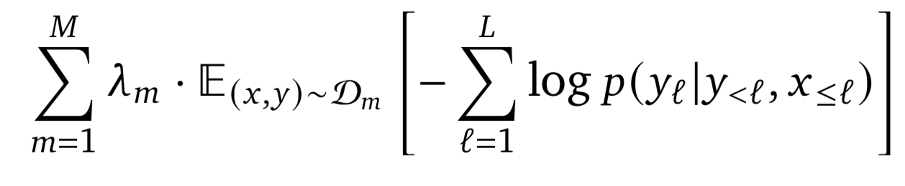

Chapter 3 Multimodal architectures
Authors: Luyang Chu, Karol Urbanczyk, Giacomo Loss, Max Schneider, Steffen Jauch-Walser
Supervisor: Christian Heumann
Multimodal learning refers to the process of learning representations from different types of input modalities, such as image data, text or speech. Due to methodological breakthroughs in the fields of Natural Language Processing (NLP) as well as Computer Vision (CV), in recent years multimodal models have gained increasing attention as they are able to strengthen predictions and better emulate the way humans learn. This chapter focuses on discussing images and text as input data. The remainder of the chapter is structured as follows:
The first part “Image2Text” discusses how transformer-based architectures improve meaningful captioning for complex images using a new large scale, richly annotated dataset COCO (T.-Y. Lin, Maire, Belongie, Hays, Perona, Ramanan, Dollár, and Zitnick 2014b; Cornia et al. 2020). Whether it is seeing a photograph and describing it or parsing a complex scene and describing its context, it is not a difficult task for humans. But it is much more complex and challenging for computers. We start with focusing on images as input modalities. In 2014 Microsoft COCO was developed with a primary goal of advancing the state-of-the-art (SOTA) in object recognition by diving deeper into a broader question of scene understanding (T.-Y. Lin, Maire, Belongie, Hays, Perona, Ramanan, Dollár, and Zitnick 2014b). COCO stands for Common Objects in Context. It addresses three core problems in scene understanding: object detection (non-iconic views), segmentation, and captioning. For tasks like machine translation and language understanding in NLP, transformer-based architecture is widely used. However, the potential of these applications in the multi-modal context has not been fully covered. With the help of the COCO dataset, a transformer-based architecture: Meshed-Memory Transformer for Image Captioning (\(M^2\)) will be introduced to improve both image encoding and the language generation steps (Cornia et al. 2020). The performance of the (\(M^2\)) Transformer and different fully-attentive models will be evaluated and compared on the COCO dataset.
Next, in Text-to-Image, the idea of incorporating textual input in order to generate visual representations is described. Current advancements in this field have been made possible largely due to recent breakthroughs in NLP, which first allowed for learning contextual representations of text. Transformer-like architectures are being used to encode the input into embedding vectors, which are later helpful in guiding the process of image generation. The chapter discusses the development of the field in chronological order, looking into details of the most recent milestones. Concepts such as GAN, VAE, VQ-VAE, diffusion, and autoregressive models are covered to let the reader better understand what are the roots of the current research and where it is heading. Some of the most outstanding outputs generated by state-of-the-art works are also presented in the chapter.
The third part, “Images supporting Language Models”, deals with the integration of visual elements in pure textual language models. Distributional semantic models such as Word2Vec and BERT assume that the meaning of a given word or sentence can be understood by looking at how (in which context) and when the word or the sentence appear in the text corpus, namely from its “distribution” within the text. But this assumption has been historically questioned, because words and sentences must be grounded in other perceptual dimensions in order to understand their meaning (see for example the “symbol grounding problem”; Harnad 1990). For these reasons, a broad range of models has been developed with the aim to improve pure language models, leveraging on the addition of other perceptual information, such as visual ones. This subchapter focuses in particular on the integration of visual elements (images) to support pure language models for various tasks at the word-level and sentence-level. The starting point is always a language model, on which visual representations (extracted often with the help of large pools of images like MS COCO, see chapter “Img2Text” for further references) are to be “integrated”. But how? There has been proposed a wide range of solutions: On one side of the spectrum, textual elements and visual ones are learned separately and then “combined” together whereas on the other side, the learning of textual and visual features takes place simultaneously/jointly.
FIGURE 3.1: Left: (???): stacked autoencoders to learn higher-level embeddings from textual and visual modalities, encoded as vectors of attributes. Right: Bordes et al. (2020): textual and visual information fused in an Intermediate space denoted as “grounded space”; the “grounding objective function” is not applied directly on sentence embeddings but trained on this intermediate space, on which sentence embeddings are projected.
For example, Silberer and Lapata (2012) implement a model where a one-to-one correspondence between textual and visual space is assumed. Text and visual representations are passed to two separate unimodal encoders and both outputs are then fed to a bimodal autoencoder. On the other side, Bordes et al. (2020) propose a “text objective function” whose parameters are shared with an additional “grounded objective function”. The training of the latter takes place in what the authors called a “grounded space”, which allows to avoid the one-to-one correspondence between textual and visual space. These are just introductory examples and between these two approaches there are many shades of gray (maybe more than fifty…). These models exhibit in many instances better performance than pure language models, but they still struggle on some aspects, for example when they deal with abstract words and sentences.
Afterwards, in “Text supporting Image Models”, approaches where natural language is used as supervision for CV models are described. Intuitively these models should be more powerful compared to models supervised solely by manually labeled data, simply because there is much more training data available.
An important example for this is the CLIP model (Radford, Kim, Hallacy, Ramesh, Goh, Agarwal, Sastry, Askell, Mishkin, Clark, and others 2021) with its new dataset WIT (WebImageText) comprising 400 million text-image pairs scraped from the internet. Similar to “Text2Image” the recent successes in NLP have inspired new approaches in this field. Most importantly pre-train methods, which directly learn from raw text (e. g. GPT-n, Generative Pre-trained Transformer; T. Brown et al. 2020). So, CLIP stands for Contrastive Language-Image Pre-training. A transformer-like architecture is used for jointly pre-training a text encoder and an image encoder. For this the contrastive goal to correctly predict which natural language text pertains to which image inside a certain batch, is employed. Training this way turned out to be more efficient than to generate captions for images. This leads to a flexible model, which at test time uses the learned text encoder as a “zero-shot” classifier on embeddings of the target dataset’s classes. The model, for example, can perform optical character recognition, geo-location and action-recognition. Performance-wise CLIP can be competitive with task-specific supervised models, while never seeing an instance of the specific dataset before. This suggests an important step towards closing the “robustness gap”, where machine learning models fail to meet the expectations set by their previous performance – especially on ImageNet test-sets – on new datasets.
Finally, “Text plus Images” discusses how text and image inputs can be incorporated into a single unifying framework in order to get closer to a general self-supervised learning model. There are two key advantages that make such a model particularly interesting. Similar to models mentioned in previous parts, devoid of human labelling, self-supervised models don’t suffer from the same capacity constraints as regular supervised learning models. On top of that, while there have been notable advances in dealing with different modalities using single modality models, it is often unclear to which extend a model structure generalizes across different modalities. Rather than potentially learning modality-specific biases, a general multipurpose framework can help increase robustness while also simplifying the learner portfolio. In order to investigate different challenges and trends in vision-and-language modelling, this section takes a closer look at three different models, namely data2vec (Baevski et al. (2022)), VilBert (J. Lu et al. (2019b)) and Flamingo (Alayrac, Donahue, Luc, Miech, Barr, Hasson, Lenc, Mensch, Millican, Reynolds, and others (2022)) Data2vec is a new multimodal self-supervised learning model which uses a single framework for either speech, natural language processing or computer vision. This is in contrast to earlier models which used different algorithms for different modalities. The core idea of data2vec, developed by MetaAI, is to predict latent representations of the full input data based on a masked view of the input in a self-distillation setup using a standard transformer architecture. (Baevski et al. (2022)) As a result, the main improvement is in the framework itself, not the underlying models themselves. For example, the transformer architecture being used follows Vaswani, Shazeer, Parmar, Uszkoreit, Jones, Gomez, Kaiser, et al. (2017b). Through their parallelizability, transformers have several advantages over CNNs particularly when large amounts of data are being used, making them the standard approach in vision-language modelling. (Dosovitskiy, Beyer, Kolesnikov, Weissenborn, Zhai, Unterthiner, Dehghani, Minderer, Heigold, Gelly, and others (2020)) VilBert is an earlier model that in contrast to data2vec can handle cross-modality tasks. Finally, Flamingo is a modern few shot learning model which features 80B parameters - significantly more than the other two models. Through a large language model incorporated in its architecture, it has great text generating capabilities to tackle open-ended tasks. It also poses the question how to efficiently train increasingly large models and shows the effectiveness of using perceiver architectures (Jaegle, Gimeno, Brock, Vinyals, Zisserman, and Carreira (2021a)) to encode inputs from different modalities as well as how to leverage communication between pretrained and frozen models.
3.1 Image2Text
*Author: Luyang Chu
*Supervisor: Christian Heumann
Image captioning means autonomously producing descriptive sentences for images. It has stimulated interest in both natural language processing and computer vision research in recent years. Image captioning is a key task that requires a semantic comprehension of images as well as the capacity to generate accurate and precise description sentences.
3.1.1 Microsoft COCO: Common Objects in Context
Understanding of visual scenes plays an important role in computer vision research (CV).Many tasks are included in it, such as image classification, object detection, object localization and semantic scene labeling. Through the computer vision research history, Image Datasets have played a critical role. They are not only essential for training and evaluating new algorithms, but also lead the research to new challenging directions.(T.-Y. Lin, Maire, Belongie, Hays, Perona, Ramanan, Dollár, and Zitnick 2014b) In the early year, researchers developed Datasets (Deng et al. 2009),(Xiao et al. 2010),(Everingham et al. 2010) which enabled the direct comparison of hundreds of image recognition algorithms, that was the early evolution in object recognition. Recent years, ImageNet (Deng et al. 2009) which contains millions of images has enabled breakthroughs in both object classification and detection research using new deep learning algorithms.
With the goal of advancing the state-of-art in object recognition especially scene understanding, a new large scale data called Microsoft COCO was published in 2014. MS COCO focuses on three core problems in scene understanding: detecting non-iconic views, detecting the semantic relationships between objects and precise localization of image objects.(T.-Y. Lin, Maire, Belongie, Hays, Perona, Ramanan, Dollár, and Zitnick 2014b)
MS COCO Dataset contains 91 common object categories with a total of 328,000 images as well as 2,500,000 labeled instances. All these images could be recognized by a 4 year old child. 82 categories include more than 5000 labeled The labeled instances which may support the detection of relationships between objects in COCO. In order to provide precise localization of object instances, only “Thing” categories like car, table, dog will be included. Objects which do not have clear boundaries like sky, sea, grass, will not be included. In current object recognition research, algorithms perform well on images with iconic views. These images always contains the single object category in the center of the image. To accomplish the goal of detecting the contextual relationships between objects, more complex images with multiple objects or natural images which comes from our daily life are gathered for the Dataset.
In addition to MC COCO, researchers have been working on the development of new large databases. In recent years many new large databases like ImageNet, PASCAL VOC and SUN have been developed in the field of computer vision. Each of this dataset has its on specific focus.
Datasets for object recognition can be roughly split into three groups: object classification, object detection and semantic scene labeling.
Object classification requires binary labels to indicate whether objects are present in an image, ImageNet (Deng et al. 2009) is clearly distinguishable from other datasets in terms of the dataset sizes. ImageNet is containing 22k categories with 500-1000 images each.(T.-Y. Lin, Maire, Belongie, Hays, Perona, Ramanan, Dollár, and Zitnick 2014b), in conparison to other datasets,the ImageNet dataset contains over 14 million labeled images with both entry-level and fine-grained categories by using WordNet Hierarchy and has enabled significant advances in image classification.
Detecting an object includes two steps, first is to ensure that an object from a specified class is present, the second step is to localize the object in the image with a bounding box. This can be implemented into tasks like face detection or pedestrians detection. The PASCAL VOC (Everingham et al. 2010) dataset is used to help the detection of basic object categories. With 20 object categories and over 11,000 images, PASCAL VOC labeled over 27,000 object instance by using bounding boxes. Almost 7,000 object instances from them had detailed segmentations. (T.-Y. Lin, Maire, Belongie, Hays, Perona, Ramanan, Dollár, and Zitnick 2014b)
Labeling semantic objects in a scene requires that each pixel of an image be labeled as belonging to a category, such as sky, chair, etc, but individual instances of objects do not need to be segmented. (T.-Y. Lin, Maire, Belongie, Hays, Perona, Ramanan, Dollár, and Zitnick 2014b) Some objects like sky, grass, street can also be defined and labeled in this way. The dataset SUN (Xiao et al. 2010) combines many of the properties of both object detection and semantic scene labeling datasets for the task of scene understanding, it contains 908 scene categories from the WordNet dictionary (Fellbaum 2000) with segmented objects. The 3,819 object categories split them to object detection datasets (person, chair) and to semantic scene labeling (wall, sky, floor). (T.-Y. Lin, Maire, Belongie, Hays, Perona, Ramanan, Dollár, and Zitnick 2014b)
3.1.1.1 Image Collection and Annotation for MS COCO
COCO is a large-scale richly annotated Datatset, the progress of building consists of two phases:Data collection and image annotation.
In order to select representative object categories for images in COCO, researchers collected several categories from different dataset like PASCAL VOC (Everingham et al. 2010) and other sources. All these object categories can be recognized by children between 4 to 8. The quality of the object categories were ensured by co-authors.Co-authors scale the categories from 1 to 5 depending on their common occurrence, practical applications and diversity from other categories. (T.-Y. Lin, Maire, Belongie, Hays, Perona, Ramanan, Dollár, and Zitnick 2014b) The final number of the list is 91. All the categories from PASCAL VOC are also included in COCO. (Everingham et al. 2010)
With the help of representative object categories, COCO wants to collect a dataset which a majority of these images are non-iconic. All these images can be roughly divided into three types in Fig 3.2 :iconic-object images, iconic-scene images and non-iconic images.(T.-Y. Lin, Maire, Belongie, Hays, Perona, Ramanan, Dollár, and Zitnick 2014b)

FIGURE 3.2: Type of images (T.-Y. Lin, Maire, Belongie, Hays, Perona, Ramanan, Dollár, and Zitnick 2014b).
Images are collected through two strategies, firstly images from Flickr which contains photos uploaded by amateur photographer with keywords are collected. Secondly, researchers will search for pairwise combination of object categories like “dog + car” to gather more non-iconic images and images with rich contextual relationships.(T.-Y. Lin, Maire, Belongie, Hays, Perona, Ramanan, Dollár, and Zitnick 2014b)
Due to the the scale of the dataset and the high cost of the annotation process, the design of a high quality annotation pipeline with efficient cost is a difficult task. The annotation pipeline in Fig 3.3 for COCO is splitted into three primary tasks: 1. category labeling, 2.instance spotting, and 3. instance segmenting.(T.-Y. Lin, Maire, Belongie, Hays, Perona, Ramanan, Dollár, and Zitnick 2014b)

FIGURE 3.3: Annotation pipeline for COCO (T.-Y. Lin, Maire, Belongie, Hays, Perona, Ramanan, Dollár, and Zitnick 2014b).
As we can see in the Fig 3.3, object categories in each image will be determined in the first step. Due to the large number of Datasets and categories, they used a hierarchical approach instead of doing binary classification for each category. All the 91 categories have divided into 11 super-categories.The worker will examine the existence of a single instance for a given super-category. Workers will only label one instance for each super-categories with an category’s icon.(T.-Y. Lin, Maire, Belongie, Hays, Perona, Ramanan, Dollár, and Zitnick 2014b) For each image, 8 workers were asked to label it.This hierarchical approach has helped to reduce the time for labeling. However, the first phase still took ∼20k worker hours to complete.(T.-Y. Lin, Maire, Belongie, Hays, Perona, Ramanan, Dollár, and Zitnick 2014b)
In the next step, all instances of the object categories in an image were labeled, at most 10 instances of a given category per image will be labeled by each worker. In both instance spotting and instance segmenting steps, the location of the instance found by a worker in the previous stage can be seen by the current worker. Each image was labeled by 8 workers for a total of ∼10k worker hours.(T.-Y. Lin, Maire, Belongie, Hays, Perona, Ramanan, Dollár, and Zitnick 2014b)
In the final segmenting stage, each object instance is segmented, the segmentation for other instances and the specification of the object instance by a worker in the previous stage will also shown to the worker.Segmenting 2.5 Mio object instances is an extremely time consuming task which requires over 22 worker hours per 1,000 segmentations.To minimize cost and improve the quality of segmentation, all workers are required to complete a training task for each object category. In roder to ensure a better quality, an explicit verification step on each segmented instance was performed.
3.1.1.2 Comparison with other Datasets
In recent years, researchers have developed several pre-trained datasets and benchmarks which helped the developemnt of Algorithms for CV. Each of these datasets varies significantly in size, list of labeled categories and types of images. In the previos part we also introduced the different research main focus of some Datasets like ImageNet (Deng et al. 2009), PASCAL VOC (Everingham et al. 2010) and SUN (Xiao et al. 2010) ImageNe containing millions of images has enabled breakthroughs in both object classification and detection research using a new class of deep learning algorithms. It was created to capture a large number of object categories, many of which are fine-grained. SUN focuses on labeling scene types and the objects that commonly occur in them. Finally, PASCAL VOC’s primary application is object detection in natural images. MS COCO is designed for the detection and segmentation of objects occurring in their natural context.(T.-Y. Lin, Maire, Belongie, Hays, Perona, Ramanan, Dollár, and Zitnick 2014b)
With the help of Fig 3.4, we could compare COCO with ImageNet PASCAL VOC and SUN from different aspects.(T.-Y. Lin, Maire, Belongie, Hays, Perona, Ramanan, Dollár, and Zitnick 2014b)

FIGURE 3.4: Comparison COCO with other PASCAL VOC, SUN and ImageNet (T.-Y. Lin, Maire, Belongie, Hays, Perona, Ramanan, Dollár, and Zitnick 2014b).
The number of instances per category for all 91 categories for COCO and PASCAL VOC is shown in (a). Compare to PASCAL VOC, COCO has both more categories and more instances per categories.The number of object categories and the number of instances per category for all the datasets is shown in (d). MS COCO has fewer categories than ImageNet and SUN, but it has the most instances per category among all the dataset, which from the hypothesis of researchers might be useful for learning complex models capable of precise localization.(T.-Y. Lin, Maire, Belongie, Hays, Perona, Ramanan, Dollár, and Zitnick 2014b) (b,c) show the number of annotated categories and annotated instances per image for MS COCO, ImageNet Detection, PASCAL VOC and SUN (average number of categories and instances are shown in parentheses). On average COCO contains 3.5 categories and 7.7 instances per image. ImageNet and PASCAL VOC both have less than 2 categories and 3 instances per image on average. SUN dataset has the most contextual information, 9,8 categories and 17 instances per image. (e) is the distribution of instance sizes for the MS COCO, ImageNet Detection, PASCAL VOC and SUN dataset.(T.-Y. Lin, Maire, Belongie, Hays, Perona, Ramanan, Dollár, and Zitnick 2014b)
3.1.1.3 Discussion
COCO is a new large scale data set for detecting and segmenting objects found in everyday life, with the aim of the state-of-the-art in object recognition and scene understanding. It focuses on non-iconic images of objects in natural environments and contains rich contextual information with many objects present per image. COCO is typical vision datasets, which are labor intensive and costly to create. With the vast cost and over 70,000 worker hours, 2.5 Mio instances were annotated to drive the advancement of object detection and segmentation algorithms. COCO is a good benchmark for the field of CV.(T.-Y. Lin, Maire, Belongie, Hays, Perona, Ramanan, Dollár, and Zitnick 2014b) The COCO Team also shows directions for future. For example “stuff” label like “sky”, “grass” and “street” etc, may also be included in the dataset since “stuff” categories provide significant contextual information for the object detection.
3.1.2 Models for Image captioning
The image captioning task generalizes describe the visual content of an image in natural language, so it requires an algorithm to understand and model the relationships between visual and textual elements, and to generate a sequence of output words.(Cornia et al. 2020) In the last few years, collections of methods have been proposed for image captioning. Earlier approaches based on generations pf simple templates, which contains the output produced from the object detector or attribute predictor. (Socher and Fei-fei 2010), (Yao et al. 2010). With the sequential nature of language, most research on image captioning has focused on deep learning techniques,especially using Recurrent Neural Network models (RNNs)(Vinyals et al. 2015),(Karpathy and Fei-Fei 2014) or LSTMs. Mostly, RNNs are used as languages models, and visual information and sequence generation will be encoded from the output of a CNN. With the aim of modelling the relationships between image regions, words, graph convolution neural network in the image encoding phase (T. Yao et al. 2018a) or single-layer attention mechanisms (Xu et al. 2015) on the image encoding side have been proposed to incorporate more semantic and spatial relationships between objects. RNN-based-models are widely adopted, however, the model has its limitation on representation power and sequential nature.(Cornia et al. 2020) Recently, new fully-attentive models, in which the use of self-attention has replaced the recurrence,have been proposed. New approaches apply the Transformer models (Vaswani, Shazeer, Parmar, Uszkoreit, Jones, Gomez, Kaiser, et al. 2017c) and BERT (Devlin et al. 2019) models to image captioning tasks. Transformer consists of an encoder with a stack of self-attention and feed-forward layers, and a decoder which uses self-attention on words and cross-attention over the output of the last encoder layer.(Cornia et al. 2020). In some Transformer based approaches, a Transformer-like encoder was paired with an LSTM decoder. While the aforementioned approaches have exploited the original Transformer architecture. For example Herdade et al. (Herdade et al. 2019) proposed Transformer architecture for image captioning with the focus on geometric relations between input objects at the same time. Specially,an additional geometric weight between object pairs which is used to scale attention weights are computed. Similarly, an extension of the attention operator in which the final attended information is weighted by a gate guided by the context was introduced by Huang et al. (Huang et al. 2019),(Cornia et al. 2020).
3.1.3 Meshed-Memory Transformer for Image Captioning (\(M^2\))
Although Transformer-based architectures have been widely implemented in sequence modeling tasks like machine translation and language understanding. However, its applicability for multi-modal tasks like image captioning is still largely under-explored. (Cornia et al. 2020)

FIGURE 3.5: \(M^2\) Transformer (Cornia et al. 2020).
A novel fully-attentive approach called Meshed-Memory Transformer for Image Captioning (\(M^2\)) for image captioning is proposed by Marcella et al(Cornia et al. 2020) with the aim of improving the design of both the image encoder and the language decoder. Compare to all previous image captioning models, \(M^2\) ( see Fig. 3.5 has two new novelties, the encoder encodes a multi-level representation of the relationships between image regions with respect to low-level and high-level relations, a priori knowledge can be learned and modeled by using persistent memory vectors. The multi-layer architecture exploits both low- and high-level visual relationships through a learned gating mechanism, which compute the weight at each level, therefore, a mesh-like connectivity between encoder and decoder layers is created for sentence generation process.(Cornia et al. 2020)
3.1.3.1 \(M^2\) Transformer Architecture

FIGURE 3.6: \(M^2\) Transformer Architecture (Cornia et al. 2020).
Fig 3.6 shows the detailed architecture of \(M^2\) Transformer. \(M^2\) Transformer can be divided into Encoder (left) module and Decoder (right) module, both module has multiple layers. Given the input Image region \(X\), it go through the Attention and feed forward layer. The relationship between image regions with a priori knowledge will be encoded in each encoding layer, the output of each encoding layers will be read by decoding layers to generate the caption for image word by word.(Cornia et al. 2020)
All interactions between word and image-level features of the input image \(X\) are modeled by using scaled dot-product attention. Attention operates on vectors of queries \(Q\), keys \(K\) and values \(V\) , and takes a weighted sum of value vectors according to a similarity distribution between query and key vectors. Attention can be defined as follows (Cornia et al. 2020):
\[\begin{equation} Attention(Q, K, V) = softmax(\frac{QK^T}{\sqrt{d}}) V \tag{3.1} \end{equation}\]
where \(Q\) is a matrix of \(n_q\) query vectors, \(K\) and \(V\) both contain \(n_k\) keys and values, all the vectors has the same dimensionality, and \(d\) is a scaling factor.
3.1.3.1.1 Memory-Augmented Encoder
For the given image region \(X\) , attention can be used to obtain a permutation in- variant encoding of \(X\) through the self-attention operations, the operator from the Transformer can be defined as follows (Cornia et al. 2020):
\[\begin{equation} S(X) = Attention(W_q X, W_k X, W_vX) \end{equation}\]
In this case, queries, keys, and values are linear projections of the input features,\(W_q\), \(W_k\), \(W_v\) are learnable weights, they depend solely on the pairwise similarities between linear projections of the input set X. The self-attention operator encodes the pairwise relationships inside the input. But self-attention also has its limitation: a prior knowledge on relationships between image regions can not be modelled. To overcome the limitation, Marcella et al(Cornia et al. 2020) introduce Memory-Augmented Attention operator by extending the keys and values with additional prior information,which does not depend on image region \(X\). The additional keys and values are initialized as plain learnable vectors which can be directly updated via SGD. The operator can be defined as (Cornia et al. 2020):
\[\begin{align} M_{mem}(X) &= Attention(W_qX, K, V ) \notag \\ K &= [W_kX, M_k]\notag \\ V &= [W_vX, M_v] \end{align}\]
\(M_k\) and \(M_v\) are learnable matrices, with \(n_m\) rows. [·,·] indicates concatenation. The additional keys and value could help to retrieve a priori knowledge from Input while remaining the quries unchanged.(Cornia et al. 2020)
For the Encoding Layer, Memory-augmented operator is d into a Transformer-like layer, the output applied to position-wise feed-forward layer (Cornia et al. 2020):
\[\begin{equation} F(X)_i= U\sigma(V X_i + b) + c; \end{equation}\]
\(X_i\) indicates the \(i\)-th vector of the input set, and \(F(X)_i\) the \(i\)-th vector of the output. Also, \(\sigma(·)\) is the ReLU activation function, \(V\) and \(U\) are learnable weight matrices, \(b\) and \(c\) are bias terms.(Cornia et al. 2020)
Each components will be included in a residual connection and a layer norm operation. The complete definition of an encoding layer can be finally written as (Cornia et al. 2020):
\[\begin{align} Z &= AddNorm(M_{mem}(X))\notag \\ \tilde{X}&=AddNorm(F(Z)) \end{align}\]
Finally the Full Encoder has multiple encoding layers in sequence, therefore the \(i\)-th layer uses the output set computed by layer \(i − 1\), higher encoding Layers can exploit and refine relationships identified by previous layers, \(N\) encoding layers will produce the output \(\tilde{X} = (\tilde{X}^1 \dots \tilde{X}^n)\).(Cornia et al. 2020)
3.1.3.1.2 Meshed Decoder
The decoder depends on both previously generated words and image region encodings. Meshed Cross-Attention can take the advantage of all the encoding layers to generate sentences for the image. On the right side of the Fig 3.6 shows the structure of the Meshed Decoder. The input sequence vector \(Y\) and the output from all encoding layers \(\tilde{X}\) are connected by Meshed Attention operator gated through cross-attentions. The meshed attention operator can be formally defined as (Cornia et al. 2020):
\[\begin{equation} M_{mesh}(\tilde{X}, Y) =\sum_{i = 1}^{N}\alpha_i C(\tilde{X^i}, Y) \end{equation}\]
\(C(·, ·)\) stands for the encoder-decoder cross-attention, it could be defined with queries from decoder and the keys and values from encoder.(Cornia et al. 2020)
\[\begin{equation} C(\tilde{X^i}, Y) = Attention(W_q Y, W_k \tilde{X^i}, W_v \tilde{X^i}) \end{equation}\]
\(\alpha_i\) is a matrix of weights same size as the cross-attention results, \(\alpha_i\) models both single contribution of each encoding layer and the relative importance between different layers.(Cornia et al. 2020)
\[\begin{equation} \alpha_i = \sigma(W_i [Y,C(\tilde{X^i}, Y)]+ b_i) \end{equation}\]
The [·,·] indicates concatenation and \(\sigma\) is the sigmoid activation function, \(W_i\) is a weight matrix, and \(b_i\) is a learnable bias vector.(Cornia et al. 2020)
In decoding layers the prediction of a word should only depend on the word generated previously, so the decoder layer comprises a masked self- attention operation, the operator build connection between queries derived from the \(t\)-th element of its input sequence Y with keys and values from left sub-sequence,i.e. \(Y_{≤t}\).
Simlilar as the Encoding layer, the decoder layer also contains a position-wise feed-forward layer, so the decoder layer can be finally defined as (Cornia et al. 2020):
\[\begin{align} Z &= AddNorm(M_{mesh}(X,AddNorm(S_{mask}(Y ))) \notag \\ \tilde{Y} &= AddNorm(F(Z)), \end{align}\]
\(S_{mask}\) indicates a masked self-attention over time.(Cornia et al. 2020) Decoder with multiple decoder layers, takes the input word vectors and the \(t\)-th element of its output sequence to make the prediction of a word for \(t + 1\), conditioned on th \(Y_{≤t}\). Finally the decoder takes a linear projection and a softmax operation, which encodes a probability over words in the dictionary.(Cornia et al. 2020)
3.1.3.1.3 Comparison with other models on COCO Datasets
The \(M^2\) Transformer was evaluated on COCO (T.-Y. Lin, Maire, Belongie, Hays, Perona, Ramanan, Dollár, and Zitnick 2014b). COCO is the most commonly used Test dataset for image captioning. In stead of using the original COCO datsets, Cornia et al. (2020) follows the split of COCO provided by Karpathy and Fei-Fei (2014). Karpathy uses 5000 images for validation, 5000 images for testing and the rest for training.
For model evaluation and comparison, standard captioning metrics like BLEU (Papineni et al. 2002), METEOR (Banerjee and Lavie 2005), ROUGE (Lin 2004,), CIDEr (Vedantam, Zitnick, and Parikh 2015), and SPICE (Anderson et al. 2016) which have been introduced in the second chapter are used.

FIGURE 3.7: Comparison with Transformer-based alternatives (Cornia et al. 2020)
Transformer model in original configuration with six layers has been applied to captioning, researchers speculated that specific architectures are required for captioning, so variations of the original Transformer are compared with \(M^2\) Transformer. Other Variations are Transformer with three layers and “Attention on Attention” (AoA) approach (Huang et al. 2019) to the attentive layers, both in the encoder and in the decoder. (Cornia et al. 2020) The second part intends to evaluate the importance of the meshed connections between encoder and decoder layers. \(M^2\) Transformer (1 to 1) is a reduced version of original \(M^2\) Transformer, in which one encoder layer only connect to one corresponding decoder layer instead of connect to all the decoding layers. As we can see from the Fig 3.7, the original Transformer has 121.8 CIDEr, compare with it, the reduced version of \(M^2\) Transformer, we can see the improvement already (129.2 CIDEr). With the respect to meshed connectivity, which help to exploit relationships encoded at all layers and weights them with a sigmoid gating, we could observe better improvement in CIDEr from 129.2 to 131.2. Also the role of mem- ory vectors and the softmax gating schema for \(M^2\) Transformer are also included in the table. Without the memory vector lead to the recution of the performance of nearly 1 CIDEr in both reduced \(M^2\) Transformer and the original \(M^2\) Transformer.(Cornia et al. 2020)

FIGURE 3.8: Comparison with the state of the art on the “Karpathy” test split, in single-model setting (Cornia et al. 2020).
Fig 3.8 compares the performance of \(M^2\) Transformer with several recent proposals for image captioning. SCST (Rennie et al. 2017) and Up- Down (Anderson et al. 2018), use attention over the grid of features and attention over regions. RFNet (???), which uses a recurrent fusion network to merge different CNN features; GCN-LSTM (T. Yao et al. 2018b) uses a Graph CNN to exploit pairwise relationships between image regions; SGAE (Yang et al. 2019) uses instead auto-encoding scene graphs. The original AoANet (Huang et al. 2019) approach uses attention on attention for encoding image regions and an LSTM language model. Finally, the ORT (Herdade et al. 2019) uses a plain Transformer and weights attention scores in the region encoder with pairwise distances between detections (Cornia et al. 2020).
In Fig 3.8, the \(M^2\) Transformer exceeds all other models on BLEU-4, METEOR,CIDEr. The performance of \(M^2\) Transformer was very close and competitive with SGAE on BLEU-1 and with ORT on SPICE.

FIGURE 3.9: Examples of captions generated by \(M^2\) Transformer and the original Transformer model, as well as the corresponding ground-truths (Cornia et al. 2020).
The Fig 3.9 shows some examples of captions generated by \(M^2\) Transformer and the original Transformer model, as well as the corresponding ground-truths. According to the selected examples of captions, \(M^2\) Transformer shows the ability to generate more accurate descriptions of the images, and the approaches could detect the more detailed relationships between image regions.(Cornia et al. 2020).
The \(M^2\) Transformer is a new Transformer- based architecture for image captioning. It improves the image encoding by learning a multi-level representation of the relationships between image regions while exploiting a priori knowledge from each encoding layer, and uses a mesh-like connectivity at decoding stage to exploit low- and high-level features at the language generation steps. The results of model evaluation with COCO shows that, the performance of \(M^2\) Transformer approach surpasses most of the recent approaches and achieves a new state of the art on COCO.(Cornia et al. 2020).
3.2 Text-to-image
Author: Karol Urbańczyk
Supervisor: Jann Goschenhofer
Have you ever wondered what a painting artist could bring you if you ordered a high-quality oil painting of a psychedelic hamster dragon? Probably not. Nevertheless, one of the answers could be:

FIGURE 3.10: Hamster dragon
The catch is that there is no human artist. The above picture comes from a 3.5-billion parameter model called GLIDE by OpenAI (Nichol et al. 2021b). Every single value of every pixel was generated from a distribution that the model had to learn in the first place. Before generating the image, GLIDE abstracted what ‘hamster’ and ‘dragon’ are from looking at millions of training images. Only then, it was able to create and combine them successfully into a meaningful visual representation. Welcome to the world of current text-to-image modelling!
The cross-modal field of text-to-image models has developed significantly over recent years. What was considered unimaginable only a few years ago, today constitutes a new benchmark for researchers. New breakthroughs are being published every couple of months. What might be even more important, possible business use cases are emerging, which attracts investment from the greatest players in AI research. However, a further trend of closed-source models is continuing and the text-to-image field is probably one the most obvious ones where it can be noticed. We might need to get used to the fact that the greatest capabilities will soon be monopolized by few companies.
At the same time, the general public is becoming aware of the field itself and the disruption potential it brings. Crucial questions are already emerging. What constitutes art? What does the concept of being an author mean? The result of a generative model is in a sense a combination, or variation, of the abstracts it has seen in the past. But the same stands for a human author. Therefore, is a discussion about the prejudices and biases needed? Answers to all of these will require refinement through an extensive discussion. The last section of this chapter will try to highlight the most important factors that will need to be considered.
However, the primary intention of this chapter is to present the reader with a perspective on how the field was developing chronologically. Starting with the introduction of GANs, through the first cross-domain models, and ending with state-of-the-art achievements (as of September 2022), it will also try to grasp the most important concepts without being afraid of making technical deep dives.
The author is aware that since the rapid development pace makes it nearly impossible for this section to stay up-to-date, it might very soon not be fully covering the field. However, it must be stressed that the cutting-edge capabilities of the recent models tend to come from the scale and software engineering tricks. Therefore, focusing on the core concepts should hopefully make this chapter have a universal character, at least for some time. This design choice also explains why many important works did not make it to this publication. Just to name a few of them: GAWWN (S. E. Reed, Akata, Mohan, et al. 2016), MirrorGAN (Qiao et al. 2019), or most recent ones: LAFITE (Zhou et al. 2021), Make-a-Scene (Gafni et al. 2022) or CogView (Ding et al. 2021). In one way or another, all of them pushed the research frontier one step further, which is widely acknowledged. Therefore, it needs to be clearly stated - the final selection of this chapter’s content is a purely subjective decision of the author.
3.2.1 Seeking objectivity
Before diving into particular models, it would be worth introducing objective procedures that could help assess how consecutive works are performing in comparison to their predecessors. Unfortunately, objectivity in comparing generative models is very hard to capture since there is no straight way to draw deterministic conclusions about the model’s performance (Theis, Oord, and Bethge 2015). However, multiple quantitative and qualitative techniques have been developed to make up for it. Unfortunately, there is no general consensus as to which measures should be used. An extensive comparison has been performed by Borji (2018). A few of them that seem to be most widely used in the current research are presented below.
Inception Score (IS)
Introduced by Salimans et al. (2016), Inception Score (IS) uses the Inception Net (Szegedy et al. 2015) trained on ImageNet data to classify the fake images generated by the assessed model. Then, it measures the average KL divergence between the marginal label distribution \(p(y)\) and the label distribution conditioned on the generated samples \(p(y|x)\).
\[exp(\mathop{{}\mathbb{E}}_{x}[KL(p(y|x) || p(y))])\]
\(p(y)\) is desired to have high diversity (entropy), in other words: images from the generative model should represent a wide variety of classes. On the other hand, \(p(y|x)\) is desired to have low diversity, meaning that images should represent meaningful concepts. If a range of cat images is being generated, they all should be confidently classified by Inception Net as cats. The intention behind IS is that a generative model with a higher distance (KL divergence in this case) between these distributions should have a better score. IS is considered a metric that correlates well with human judgment, hence its popularity.
Fréchet Inception Distance (FID)
A metric that is generally considered to improve upon Inception Score is Fréchet Inception Distance (FID). Heusel et al. (2017) argue that the main drawback of IS is that it is not considering the real data at all. Therefore, FID again uses Inception Net, however this time it embeds the images (both fake and real samples) into feature space, stopping at a specific layer. In other words, some of the most-right layers of the net are being discarded. Feature vectors are then assumed to come from Gaussian distribution and the Fréchet distance is calculated between real and generated data distributions:
\[d^2((m, C), (m_{w}, C_{w})) = ||m-m_{w}||_{2}^2 + Tr(C+C_{w}-2(CC_{w})^{1/2})\]
\((m, C)\) and \((m_{w}, C_{w})\) represent mean and covariance of generated and real data Gaussians respectively. Obviously, low FID levels are desired.
FID is considered to be consistent with human judgement and sensitive to image distortions, which are both desired properties. Figure 3.11 shows how FID increases (worsens) for different types of noise being added to images.
FIGURE 3.11: FID is evaluated for different noise types. From upper left to lower right: Gaussian noise, Gaussian blur, implanted black rectangles, swirled images, salt and pepper, CelebA dataset contaminated by ImageNet images. Figure from Heusel et al. (2017).
Precision / recall
Precision and recall are one of the most widely used metrics in many Machine Learning problem formulations. However, their classic definition cannot be applied to generative models due to the lack of objective labels. Sajjadi et al. (2018) came up with a novel definition of these metrics calculated directly from distributions, which was further improved by Kynkäänniemi et al. (2019). The argument behind the need for such an approach is that metrics such as IS or FID provide only a one-dimensional view of the model’s performance, ignoring the trade-off between precision and recall. A decent FID result might very well mean high recall (large variation, i.e. wide range of data represented by the model), high precision (realistic images), or anything in between.
Let \(P_{r}\) denote the probability distribution of the real data, and \(P_{g}\) be the distribution of the generated data. In short, recall is trying to answer how big part of \(P_{r}\) can be generated from \(P_{g}\), while precision is trying to grasp how many generated images fall within \(P_{r}\).

FIGURE 3.12: Definition of precision and recall for distributions. Figure from Kynkäänniemi et al. (2019).
For a more thorough explanation of metric calculation, one should follow the already mentioned Kynkäänniemi et al. (2019).
CLIP score
CLIP is a model from OpenAI [CLIP2021]. Its details can be found in the chapter about text-supporting computer vision models. In principle, CLIP is capable of assessing the semantic similarity between the text caption and the image. CLIP score is defined as:
\[\mathop{{}\mathbb{E}}[s(f(image)*g(caption))]\]
where the expectation is taken over the batch of generated images and \(s\) is the CLIP logit scale (Nichol et al. 2021b).
Human evaluations
It is common that researchers report also qualitative measures. Many potential applications of the models are focused on deceiving the human spectator, which motivates reporting of metrics that are based on human evaluation. Many variations can be found, therefore none is going to be presented here. However, the general idea is to test for:
- photorealism
- caption similarity (image-text alignment)
Usually, a set of images is presented to a human, whose task is to assess their quality with respect to the two above-mentioned criteria.
3.2.2 Generative Adversarial Networks
The appearance of Generative Adversarial Networks (GAN) was a major milestone in the development of generative models. Introduced by Ian J. Goodfellow et al. (2014b), the idea of GANs presented new architecture and training regime, which corresponded to a minimax two-player game between Generator and Discriminator (hence the word adversarial).
GANs can be considered as an initial enabler for the field of text-to-image to exist in the first place and for a long time, GAN-like models were achieving state-of-the-art results, which makes it more than justified to present their core concepts in this book.
3.2.2.1 Vanilla GAN for Image Generation
In a vanilla GAN, the Generator model (\(G\)) and Discriminator model (\(D\)) are optimized together in a minimax game, where \(G\) aims at generating a sample so convincing, that \(D\) will not be able to distinguish if it comes from real or generated images distribution. On the other hand, \(D\) is being trained to discriminate between the two. Originally, multilayer perceptron was proposed as a model architecture for both \(D\) and \(G\), although in theory any differentiable function could be used.
More formally, let \(p_{z}\) denote the prior distribution defined on the input noise vector \(z\). Then, the generator \(G(z)\) represents a function that is mapping this noisy random input to generated image \(x\). The discriminator \(D(x)\) outputs a probability that \(x\) comes from the real data rather than generator’s distribution \(p_{g}\). In this framework, \(D\) shall maximize the probability of guessing the correct label of both real and fake data. \(G\) is trained to minimize \(log(1-D(G(z)))\). Now, such representation corresponds to the following value function (optimal solution):
\[\min_{G}\min_{D}V(D,G) = \mathop{{}\mathbb{E}}_{x \sim p_{data}(x)} [log(D(x))] + \mathop{{}\mathbb{E}}_{z \sim p_{z}(z)} [log(1-D(G(z)))]\]
Figure 3.13 depicts this process in a visual way.
Some of the generated samples that had been achieved with this architecture already in 2014 can be seen in Figure 3.14.

3.2.2.2 Conditioning on Text
So far, only image generation has been covered, completely ignoring textual input. S. E. Reed, Akata, Yan, et al. (2016) introduced an interesting concept of conditioning DC-GAN (GAN with CNNs as Generator and Discriminator) on textual embeddings. A separate model is being trained and used for encoding the text. Then, result embeddings are concatenated with the noise vector and fed into the Generator. Discriminator takes embeddings as an input as well. The resulting model is referred to as GAN-INT-CLS. Both abbreviations (INT and CLS) stand for specific training choices, which are going to be explained later in the chapter. The overview of the proposed architecture can be seen in Figure 3.15.

FIGURE 3.15: The proposed architecture of convolutional GAN that is conditioned on text. Text encoding \(\varphi(t)\) is fed into both Generator and Discriminator. Before further convolutional processing, it is first projected to lower dimensionality in fully-connected layers and concatenated with image feature maps. Figure from S. E. Reed, Akata, Yan, et al. (2016).
Text embeddings
Since regular text embeddings are commonly trained in separation from visual modality simply by looking at the textual context, they are not well suited for capturing visual properties. This motivated S. E. Reed, Akata, Schiele, et al. (2016) to come up with structured joint embeddings of images and text descriptions. GAN-INT-CLS implements it in a way described in Figure 3.16.
FIGURE 3.16: Figure from S. E. Reed, Akata, Yan, et al. (2016).
GoogLeNet is being used as an image encoder \(\phi\). For text encoding \(\varphi(t)\), authors use a character-level CNN combined with RNN. Essentially, the objective of the training is to minimize the distance between encoded image representation and text representation. The image encoder is then discarded and \(\varphi\) only is used as depicted in Figure 3.15.
GAN-CLS
CLS stands for Conditional Latent Space, which essentially means GAN is conditioned on the embedded text. However, in order to fully grasp how exactly the model is conditioned on the input, we need the go beyond architectural choices. It is also crucial to present a specific training regime that was introduced for GAN-CLS and the motivation behind it.
One of the possible ways how the system could be trained is to view text-image pairs as joint observations and train the discriminator to classify the entire pair as real or fake. However, in such a case discriminator does not have an understanding of whether the image matches the meaning of the text. This is because the discriminator does not distinguish between two types of error that exist, namely when the image is unrealistic or when it is realistic but the text does not match.
A proposed solution to this problem is to present the discriminator with three observations at a time, all of which are included later in the loss function. These three are: {real image with right text}, {real image with wrong text}, {fake image with right text}. Intention is that discriminator should classify them as {true}, {false}, {false}, respectively.
GAN-INT
The motivation behind this concept comes from the fact that interpolating between text embeddings tends to create observation pairs that are still close to the real data manifold. Therefore, generating additional synthetic text embeddings and using them instead of real captions in the training process might help in the sense that it works as a form of data augmentation and helps regularize the training process. Figure 3.17 might be helpful for developing the intuition behind the interpolation process.

FIGURE 3.17: Interpolating between sentences. Figure from S. E. Reed, Akata, Yan, et al. (2016).
Results
The model achieves the best performance when both of the mentioned methods are in use (GAN-INT-CLS). Models prove to successfully transfer style (pose of the objects) and background from the training data when trained on CUB (birds) and Oxford-102 (flowers) datasets. They also show interesting zero-shot abilities, meaning they can generate observations from unseen test classes (Figure 3.18). When trained on MS-COCO, GAN-CLS proves its potential to generalize over many domains, although the results are not always coherent (Figure 3.19).
FIGURE 3.18: Zero-shot generated birds using GAN, GAN-CLS, GAN-INT, GAN-INT-CLS. Figure from S. E. Reed, Akata, Yan, et al. (2016).

FIGURE 3.19: Generated images using GAN-CLS on MS-COCO validation set. Figure from S. E. Reed, Akata, Yan, et al. (2016).
3.2.2.3 Further GAN-like development
Generative Adversarial Networks were a leading approach for text-to-image models for most of the field’s short history. In the following years after introducing GAN-INT-CLS, new concepts were emerging, trying to push the results further. Many of them had GAN architecture as their core part. In this section, a few such ideas are presented. The intention is to quickly skim through the most important ones. A curious reader should follow the corresponding papers.
StackGAN
Zhang et al. (2016) introduced what they called StackGAN. The main contribution of the paper which also found its place in other researchers’ works, was the idea to stack more than one generator-discriminator pair inside the architecture. Stage-II (second pair) generator is supposed to improve the results from Stage-I, taking into account only:
- text embedding (same as Stage-I)
- image generated in Stage-I
without a random vector. Deliberate omission of the random vector results in the generator directly working on improving the results from Stage-I. The purpose is also to increase resolution (here from 64x64 to 256x256). Authors obtained great results already with two stages, however, in principle architecture allows for stacking many of them.
FIGURE 3.20: (ref:stackgan)
AttnGAN
It is 2017 and many researchers believe attention is all they need (Vaswani, Shazeer, Parmar, Uszkoreit, Jones, Gomez, et al. 2017b). Probably for the first time in text-to-image generation attention mechanism was used by Xu et al. (2017). The authors combined the idea with what StackGAN proposed and used three stages (generators \(G_{0}\), \(G_{1}\) and \(G_{2}\)). However, this time first layers of a particular generator are attending to word feature vectors. This mechanism not only helps control how particular areas of the image are being improved by consecutive generators but also allows for visualizing attention maps.
FIGURE 3.21: Images generated by \(G_{0}\), \(G_{1}\), \(G_{2}\). Two bottom rows show 5 most attended words by \(G_{1}\) and \(G_{2}\) respectively. Figure from Xu et al. (2017).
DM-GAN
Another important milestone was DM-GAN (Dynamic Memory GAN) (Zhu et al. 2019). At that time, models were primarily focusing on generating the initial image and then refining it to a high-resolution one (as e.g. StackGAN does). However, such models heavily depend on the quality of the first image initialization. This problem was the main motivation for the authors to come up with a mechanism to prevent it. DM-GAN proposes a dynamic memory module, which has two main components. First, its memory writing gate helps select the most important information from the text based on the initial image. Second, a response gate merges the information from image features with the memories. Both of these help refine the initial image much more effectively.
DF-GAN
Last but not least, DF-GAN (Deep Fusion GAN) (Tao et al. 2020) improves the results by proposing three concepts. One-Stage Text-to-Image Backbone focuses on providing an architecture that is capable of abandoning the idea of multiple stacked generators and using a single one instead. It achieves that by a smart combination of a couple of factors, i.a. hinge loss and use of residual blocks. Additionally, Matching-Aware Gradient Penalty helps achieve high semantic consistency between text and image and regularizes the learning process. Finally, One-Way Output helps the process converge more effectively.
3.2.3 Dall-E 1
OpenAI’s Dall-E undoubtedly took the text-to-image field to another level. For the first time, a model showed great zero-shot capabilities, comparable to previous domain-specific models. To achieve that, an unprecedented scale of the dataset and training process was needed. 250 million text-image pairs were collected for that purpose, which enabled training of a 12-billion parameter version of the model. Unfortunately, Dall-E is not publicly available and follows the most recent trend of closed-source models. Or, to put it more precisely, it started this trend, and GLIDE, Dall-E 2, Imagen, Parti and others followed. Nevertheless, Dall-E’s inner workings are described in Ramesh, Pavlov, et al. (2021b) and this section will try to explain its most important parts. However, before that, it is crucial to understand one of the fundamental concepts that has been around in the field of generative models for already quite some time - namely Variational Autoencoders.
Variational Autoencoder (VAE)
Regular Autoencoder architecture aims at finding an identity function that is capable of finding a meaningful representation of the data in lower-dimensional space and then reconstructing it. It is considered an unsupervised learning method for reducing dimensionality, however, trained in a supervised regime with the data itself being the label. The component performing reduction is called an encoder, while the part responsible for reconstruction is called a decoder. The idea behind Variational Autoencoder (Kingma and Welling 2013) is similar, however, instead of learning the mapping to a static low-dimensional vector, the model learns its distribution. This design equips the decoder part with desired generative capabilities, as sampling from the latent low-dimensional space will result in varying data being generated. The architecture is depicted in Figure 3.22.

FIGURE 3.22: (ref:vae)
(fig:vae) Variational (probabilistic) Autoencoder architecture. Figure from Weng (2018).
\(q_{\phi}(z|x)\) denotes the encoder under the assumption that \(z\) comes from multivariate Gaussian. \(\mu\) and \(\sigma\) are being learned. Reconstruction process is modelled by conditional probability \(p_{\theta}(x|z)\), given samples latent vector \(z\).
VQ-VAE / dVAE
The VQ-VAE (Vector Quantized VAE) (Oord, Vinyals, and Kavukcuoglu 2017) differs from regular VAE in the way it approaches encoding the latent space. Instead of mapping data into continuous distribution, the Vector Quantized version does it in a discrete way. This is motivated by the fact that for many data modalities it is more natural to represent them in a discrete way (e.g. speech, human language, reasoning about objects in images, etc.). VQ-VAE achieves that by using a separate codebook of vectors. The architecture is depicted in Figure 3.23.
FIGURE 3.23: VQ-VAE architecture. Figure from Oord, Vinyals, and Kavukcuoglu (2017).
The idea is to map the output of the encoder to one of the vectors from the \(K\)-dimensional codebook. This process is called quantization and essentially means finding the vector that is the nearest neighbour to the encoder’s output (in a sense of Euclidean distance). Since this moment, this newly found vector from the codebook is going to be used instead. The codebook itself is also subject to the learning process. One could argue that passing gradients during the training through such a discrete system might be problematic. VQ-VAE overcomes this problem by simply copying gradients from the decoder’s input to the encoder’s output. A great explanation of the training process and further mathematical details can be found in Weng (2018) and Snell (2021).
Dall-E, however, is using what is called dVAE. Essentially, it is a VQ-VAE with a couple of details changed. In short, the main difference is that instead of learning a deterministic mapping from the encoder’s output to the codebook, it produces probabilities of a latent representation over all codebook vectors.
Dall-E system
Dall-E is composed of two stages. The above introduction of VQ-VAE was necessary to understand the first one. It really is nothing more than training dVAE to compress 256x256 images into a 32x32 grid of tokens. This model will play a crucial role in the second stage.
The second stage is about learning the prior distribution of text-image pairs. First, the text is byte-pair-encoded (Sennrich, Haddow, and Birch 2015a) into a maximum of 256 tokens, where vocabulary is of 16384 size. Next, the image representation encoded by previously trained dVAE is unrolled (from 32x32 grid to 1024 tokens) and concatenated to the text tokens. This sequence (of 256+1024 tokens) is used as an input for huge transformer-like architecture. Its goal is to autoregressively model the next token prediction.
During inference time text caption is again encoded into 256 tokens at most. The generation process starts with predicting all of the next 1024 image-related tokens. They are later decoded with the dVAE decoder that was trained in the first step. Its output represents the final image.
Results
Results achieved with the original Dall-E attracted so much attention mainly due to its diversity and zero-shot capabilities. Dall-E was capable of producing better results compared to previous state-of-the-art models which were trained on data coming from the same domain as data used for evaluation. One comparison can be seen in Figure 3.24.
FIGURE 3.24: Human evaluation of Dall-E vs DF-GAN on text caption from MS-COCO dataset. When asked for realism and caption similarity, evaluators preferred Dall-E’s results over 90\% of the time. Figure from Ramesh, Pavlov, et al. (2021b).
Outputs of some of the prior approaches described in this chapter compared with Dall-E can be seen in Figure 3.25.

FIGURE 3.25: Comparison of the results from Dall-E vs prior works on MS-COCO. Dall-E’s outputs are chosen as the best out of 512 images, ranked by a contrastive model. Figure from Ramesh, Pavlov, et al. (2021b).
Limitations
Although Dall-E made a huge step forward in text-to-image modelling, it still showed multiple flaws. First, photorealism of the outputs is still relatively low. In other words, when prompted for images containing realistic situations, it is rarely capable of deceiving human evaluators. Second, the model has evident problems with understanding relatively complex abstractions, such as text inside an image, or relative object positions in the scene.
3.2.4 GLIDE
Introduced by Nichol et al. (2021b), GLIDE started an era of huge-scale diffusion models. The concept of diffusion has already been used in the area of Deep Learning for some time before. However, the authors of the GLIDE took a step further and combined it together with text-based guidance which is supposed to steer the learning process in the direction of the text’s meaning. This powerful method was proven to achieve outstanding results which remain competitive with current state-of-the-art models at the moment of writing.
Diffusion models
Before understanding the inner workings of GLIDE, it is important to introduce the core concept that is driving it, namely diffusion. The idea of diffusion comes from physics. In short, it corresponds to the process of diffusing particles, for example of one fluid in another. Normally it has a unidirectional character, in other words, it cannot be reversed. However, as Sohl-Dickstein et al. (2015) managed to show, and Ho, Jain, and Abbeel (2020a) later improved, if the data diffusion process is modelled as a Markov chain with Gaussian noise being added in consecutive steps, it is possible to learn how to reverse it. This reversed process is exactly how images are generated by the model from pure random noise.
Let’s construct a Markov chain, where the initial data point is denoted by \(x_{0}\). In \(t\) steps, Gaussian noise is added to the data. The probability of the data at \(t\)-step can be characterized in the following way:
\[q(x_{t}|x_{t-1}):=N(x_{t};\sqrt{\alpha_{t}}x_{t-1},(1-\alpha_{t})I)\]
where \((1-\alpha_{t})\) parametrizes the magnitude of the noise being added at each step. Now, if \(x_{t-1}\) were to be reconstructed from \(x_{t}\), a model needs to learn to predict estimates of gradients from the previous steps. The probability distribution of previous steps can be estimated as follows:
\[p_{\theta}(x_{t-1}|x_{t})=N(x_{t-1};\mu_{\theta}(x_{t}),\Sigma_{\theta}(x_{t}))\]
where particular mean function \(\mu_{\theta}\) has been proposed by Ho, Jain, and Abbeel (2020a). For a more detailed explanation of how this is later parametrized and trained, one could follow Weng (2021).
GLIDE system
GLIDE can essentially be broken down into two parts. First of them is the pretrained Transformer model, which in principle is responsible for creating the text embeddings. The last token embedding is used as a class embedding (text representation) in later stages. Additionally, all tokens from the last embedding layer are being used (attended to) by all attention layers in the diffusion model itself. This makes the model aware of the text meaning while reconstructing the previous step in the Markov chain.
The second component of the GLIDE is the diffusion model itself. U-Net-like architecture with multiple attention blocks is used here. This part’s sole goal is to model \(p_{\theta}(x_{t-1}|x_{t},y)\), where \(y\) corresponds to last token embedding mentioned above. Or, to put it differently, to predict \(\epsilon_{\theta}(x_{t}|y)\) since the problem can be reframed as calculating the amount of noise being added at each step.
Additionally, to make the model even more aware of the text’s meaning, guidance is being used at inference time. In short, the idea is to control the direction of the diffusion process. The authors test two different approaches. First, they try guidance with the use of a separate classifier, OpenAI’s CLIP in this case. However, better results were in general achieved by the classifier-free guidance process. The idea is to produce two different images at each step. One is conditioned on text, while the other one is not. Distance between them is calculated and then, after significant scaling, added to the image obtained without conditioning. This way, the model speeds up the progression of the image towards the meaning of the text. The process can be written the following way:
\[\hat{\epsilon}_\theta(x_{t}|y)=\epsilon_{\theta}(x_{t}|\emptyset)+s*(\epsilon_{\theta}(x_{t}|y)-\epsilon_{\theta}(x_{t}|\emptyset))\]
where \(s\) denotes the parameter for scaling the difference between mentioned images.
Results
GLIDE achieves significantly more photorealistic results compared to its predecessors. FID reported on the MS-COCO 256x256 dataset can be seen in Figure 3.26. It is worth noting that GLIDE was not trained on this dataset, hence its zero-shot capabilities are even more impressing.

Results are also preferred by human evaluators in terms of photorealism and the similarity of the image to its caption. Comparison to DALL-E 1 results can be seen in Figure 3.27
Finally, some of the cherry-picked images together with their corresponding captions can be seen in Figure 3.28.

FIGURE 3.28: Samples from GLIDE with classifier-free-guidance and s=3. Figure from Nichol et al. (2021b).
Limitations
GLIDE suffers from two problems. First, it fails when being presented with a complex or unusual text prompt. A few examples can be seen in Figure 3.29. Also, the model is relatively slow at inference time (much slower than GANs). This is caused by the sequential character of the architecture, where consecutive steps in Markov chain reconstruction cannot be simply parallelized.
3.2.5 Dall-E 2 / unCLIP
The contribution that probably attracted the most attention in the field is known under the name Dall-E 2 (Ramesh, Dhariwal, et al. 2022a). For the first time, wide public of people not coming from Deep Learning research had picked up so much interest in its potential applications. This might be due to a great PR that could be seen from the authors, namely OpenAI. Dall-E 2, also known as just Dall-E, or unCLIP, has been advertised as a successor of Dall-E 1, on which results it significantly improved. In reality, the architecture and the results it achieved are much more similar to that of GLIDE. Additionally, social media has been flooded with images generated by the model. This was possible thanks to OpenAI giving access to it to everybody who was interested and patient enough to get through a waiting list. However, the model itself again remains unpublished. Another factor that might have contributed to Dall-E’s success were its inpainting and outpainting capabilities. Although, it is worth mentioning they were already also possible with GLIDE.
The novelty contribution of the model remains debatable from the perspective of scientific research. UnCLIP is rather a very smart combination of what was already produced by OpenAI but is now re-engineered and applied in a new way. Nevertheless, the model represents a significant leap forward, which is why it cannot be omitted in this chapter.
Dall-E 2 system
UnCLIP consists of two components: prior and decoder. Let \(x\) be the image and \(y\) its caption. \(z_{i}\) and \(z_{t}\) are CLIP image and text embedding of this \((x, y)\) pair. Then, prior \(P(z_{i}|y)\) is responsible for producing CLIP image embeddings conditioned on the text caption. A decoder \(P(x|z_{i},y)\) outputs an image conditioned on the CLIP image embedding and, again, the text caption itself.
For the prior authors try two different approaches, namely autoregressive and diffusion models. The latter ended up yielding slightly better results. Diffusion prior is nothing else than a Transformer taking as an input a special sequence of encoded text prompt, CLIP text embedding, embedding for the diffusion step, and noised CLIP image embedding.
The decoder consists of diffusion models again. Firstly, a GLIDE-like model takes CLIP image embedding as its \(x_{t}\) instead of the pure noise that was used in its original version. Similarly to the original GLIDE, classifier-free guidance is applied, however with slight differences. Lastly, two diffusion upsampler models are trained to bring images first from 64x64 to 256x256, and then from 256x256 to 1024x1024 resolution. Authors find there is no benefit of conditioning these models on text captions. Finally, unCLIP can be summarized as a mixture of GLIDE and CLIP with a lot of engineering behind it.
Results
When compared to GLIDE, unCLIP shows it is capable of representing wider diversity of the data, while achieving a similar level of photorealism and caption similarity. Comparison to previous works on the MS-COCO dataset shows that unCLIP achieves unprecedented FID (Figure 3.30). A few output examples calculated on MS-COCO captions can be found in Figure 3.31.

FIGURE 3.30: Comparison of FID on MS-COCO. The best results for unCLIP were reported with the guidance scale of 1.25. Figure from Ramesh, Dhariwal, et al. (2022a).

Limitations
UnCLIP suffers from very similar problems as its predecessor GLIDE. First, compositionality in the images tends to sometimes be confused by the model. Failure cases can be seen in Figure 3.32. Second, UnCLIP struggles with generating coherent text inside an image (Figure 3.33). Authors hypothesize that using CLIP embeddings, although improved diversity, might be responsible for making these problems more evident than in GLIDE. Lastly, UnCLIP often fails with delivering details in highly complex scenes (Figure 3.34). Again, according to the authors, this might be a result of the fact that the decoder is producing only 64x64 images which are later upsampled.

3.2.6 Imagen & Parti
Only a few months after unCLIP was released by OpenAI, for the first time Google came into play with its new autoregressive model called Imagen (Saharia et al. 2022b). Another one followed just two months later - Parti (J. Yu, Xu, Koh, et al. 2022b). Both of these models pushed the boundaries even further, although they take entirely different approaches. None of them is introducing a completely new way of looking at the problem of text-to-image generation. Their advancements come from engineering and further scaling existing solutions. However, it must be stressed that currently (September 2022) they are delivering the most outstanding results on the market.
Imagen is a diffusion model. Its main contribution is that instead of using a text encoder trained on image captions, it actually uses a huge pretrained NLP model called T5-XXL (Raffel et al. 2019b) that is taken off the shelf and frozen. Authors argue that this helps the model understand language much more deeply, as it has seen more diverse and complex texts than just image captions.
On the other hand, Parti takes an autoregressive approach. Similarly to the first version of Dall-E, it consists of two stages, namely the image tokenizer and sequence-to-sequence autoregressive part which is responsible for generating image tokens from a set of text tokens. In this case, ViT-VQGAN (Yu et al. 2021) is used as a tokenizer and the autoregressive component is again Transformer-like.
Results
Both of the models improved the FID significantly compared to the previous works. Figure 3.35 shows the comparison.

Samples from Parti can be seen in Figure 3.36. They are included here on purpose - this is the current state-of-the-art as of the moment of writing!
Limitations
J. Yu, Xu, Koh, et al. (2022b) mention an extensive list of problems, with which Parti still struggles. At this point, all of them can be treated as a set that is common to almost all the models available on the market. Among others, they touch:
- feature blending (where features of two different objects are missed)
- omission or duplicating details
- displaced positioning of objects
- counting
- negation in text prompts
and many many more. These flaws pose a challenge for future research and undoubtedly they are the ones that need to be addressed first to enable another leap forward in the field of text-to-image generation.
3.2.7 Discussion
Lastly, it is important to mention a couple of different topics, or trends, which are intrinsically linked with text-to-image generation. Together with previous sections, they should give the reader a holistic view of where research currently stands (again, as of September 2022).
Open- vs closed-source
The first trend that has emerged only recently is AI labs refusing to open-source their state-of-the-art models. This is in clear opposition to how the entire AI community was behaving from the very beginning of the recent Deep Learning boom. Apparently, possible commercial opportunities that come along with owning the software are too big to be ignored. The trend is very disruptive for the market - it is clear that the community is currently witnessing the maturation of AI business models. Needless to say, it is followed by all the greatest AI labs, just to name a few: OpenAI, DeepMind, Google Brain, Meta AI, and many others. As long as commercial achievements will have an edge over academic community research, it is highly doubtful that the trend will be reversed. However, it needs to be stressed that all of them are still issuing more or less detailed technical specifications of their work in a form of scientific papers, which is definitely a positive factor. We, as a community, can only hope it will not change in the future.
Open-Source Community
As the trend of closed-sourceness is clearly visible across many Deep Learning areas, the text-to-image research is actually well represented by an open-source community. The most important milestones of the recent years indeed come from OpenAI, however, new approaches can be seen across a wide community of researchers. Many of these models are public, meaning that any user with minimal coding experience can play with them. Although we decided not to go into details of particular works, it is important to name a few that became the most popular:
- VQGAN-CLIP (Crowson et al. 2022)
- Midjourney (Midjourney 2022)
- Latent Diffusion (Rombach et al. 2021)
- Stable Diffusion (Rombach et al. 2022)
Potential applications
Image generation that can be done in a controllable manner has undoubtedly huge potential for commercialization. Although the field is currently still very immature, hypotheses about which industries might be disrupted are emerging. Essentially, every branch that has to do with generating visual art, be it static images or videos, should observe the trend closely. Graphic design, movie making, stock photos - just to name a few that might be interested. Currently, experimental use cases in the area of texture synthesis, product design, or building virtual reality worlds can already be observed. AI, even if still incapable of generating the final product, can help automate a significant part of the production chain, which essentially means time and money savings. The inpainting and outpainting capabilities of recent models play a significant role in this trend. Although it is still very hard to judge which direction it takes in the future, it will definitely be a very interesting and disruptive change. Who wouldn’t like to see movies being soon generated directly from a book’s text, pixel value by pixel value?
Ethics / Conclusion
Automated image generation poses an array of serious questions of ethical character. Fortunately, many of them are already very well recognized by the community. For example, OpenAI elaborates extensively on the risks and limitations of their Dall-E 2 in this blog post by Mishkin et al. (2022). A few of the most important topics are going to be presented here.
The first and very significant risk is the potential misuse of the models. Fake image generation can easily be used for harassment and disinformation. Especially combined with inpainting, which is capable of erasing or adding objects to real scenes, it poses a non-trivial challenge for researchers on how to responsibly share their work.
Another important area touches on biases and stereotypes which are intrinsically built into the technology. Obviously, a model combines concepts from the data it has seen. However, if this area is to be commercialized, it needs to ensure broader diversity. An interesting example of Dall-E 2 samples can be seen in Figure 3.37.
FIGURE 3.37: Biased samples from Dall-E 2. Figure from Mishkin et al. (2022).
In order to fully enable AI generation on the market, the problem of copyrights needs to be solved in the first place. It is definitely not clear who is the author of generated images. Is it the person who came with a text prompt and ran the model? Is it a model engineer? Author of the model’s architecture? Owner of the data it has been trained on? Or maybe the model itself? Another question is what really is a creative contribution and eventually should result in copyright being granted. These and many others definitely require extensive debate and hopefully, legal solutions following it.
3.3 Images supporting Language Models
Author: Giacomo Loss
Supervisor: Matthias Aßenmacher
3.3.1 Words In (Non-Symbolic) Contexts
Imagine you were alone in a foreign country, you could not speak the language and the only resource you had were a dictionary in the foreign language. You see a word written on a sign but you cannot understand its meaning. What could you do? One idea would be do open the dictionary and look the word up. The problem is that the word is defined by using other words in the foreign language. As a second step you would thus look these new words up and continue like that in further steps to the “infinity and beyond” (cit. Buzz Lightyear). But even after looking every single word in the dictionary up, you would still not be able to understand the meaning of the word written on the sign. If on that sign, next to the unknown word, something else was instead depicted, for example an image of a fork and a knife, you might speculate that the word indicates something which has to do with food, like a restaurant. And this without explicitly knowing the meaning of the word. This example is inspired by the work of Stevan Harnad, which formulated at the beginning of the 90’s the so called Symbol Grounding Problem (Harnad (1990)). It asserts that it is not possible to understand the meaning (semantics) of a word by just looking at other words because words are essentially meaningless symbols. It is possible to understand the meaning only if the word is put in a context, a perceptual space, other than that of written language: the word must be grounded in non-symbolic representations, like images, for example. Over the past 10 years there has been a whopping development of distributional semantic models (DSMs, henceforth), especially after the Word2vec (Mikolov, Chen, et al. (2013b)) revolution. This family of models assumes that the meaning of words and sentences can be inferred by the “distribution” of those words and sentences within a text corpus (the Distributional Hypothesis formulated by Harris and others (1954)). But the Symbol Grounding Problem mentioned earlier suggests that DSMs do not resemble the way words are learned by humans, which is in multimodal perceptual contexts. For these reasons, models have been developed with the goal to integrate further modalities (like visual ones) in pure language models, assuming that grounding words and sentences in other perceptual contexts should lead to a better understanding of their semantics and, as a result, to better performance in pure language tasks.
The focus of this subchapter are models which empower pure language models with visual modalities in form of images: their goal is to obtain better semantic representations (in form of embedding vectors) of words. First, a quick recap of the main pure language models will be provided. After that, the historical evolution of the integration of images as visual modalities into pure language models will be discussed: from simple concatenation of textual and visual modalities, to the projection of visual elements in a common grounded space and more recently, the use of Transformers (see figure 3.38). Eventually, a comprehensive evaluation of the different models against benchmarks will be carried out.
Again, the focus is on how to employ visual elements to obtain embeddings able to capture the semantics of words. More concrete applications, such as those in the field of machine translation are out of scope and will be only marginally addressed at the end of the subchapter.

FIGURE 3.38: Historical evolution of models which integrate visual information into pure language models.
3.3.2 Word-Embeddings: Survival-Kit
In other parts of this books, the most important NLP-models and the latest developments in the field are extensively described. In this section, some information will be provided, which might be helpful to understand some of the aspects discussed in this subchapter. As it may have been inferred in the introduction, the starting point is always a pure language model, namely a model which employs only textual inputs in order to generate word embeddings, which are representations of words in form of numerical vectors. The most widely used pure language models in the papers presented in this subchapter are the following three:
- Skipgram (Word2vec, Mikolov, Chen, et al. (2013b)), where given a target word, the probability of the neighboring (surrounding) words in a pre-defined window has to be maximized. Trainig takes place either through a hierarchical softmax or through negative sampling, which involves maximizing the probability of words which are real neighbors and minimizing that of words which are not real neighbors (the “negative samples”)
- GloVe (Pennington, Socher, and Manning (2014)), which is based on words co-occurrence across the entire corpus, with the goal of minimizing the difference between the dot product of the embedding vectors of two words and the logarithm of the number of co-occurrences
- BERT (Devlin et al. (2018c)): two pre-training tasks to obtain word-embeddings:
- Masked Language Modelling (MLM): given a sentence with [MASK]ed tokens, the goal is to predict these masked tokens
- Next Sentence Prediction (NSP): given two sentences A and B, the goal is to predict if B follows from A
Two additional remarks to conclude this section. First, Skipgram and GloVe generate embeddings which are “context-free”: they do not take into account the context in which words occur. On the contrary, BERT is designed to represent words given the context (sentence) in which they occur: we can thus have different embeddings for the same word, depending on the context. Second, the inputs of these models are tokens: with the help of a tokenizer, which can be different for different models, the text is split in “chunks”, called tokens (and they are not necessarily single words).
3.3.3 The Beginning: Sequential Multimodal Embeddings
Supposing we add linguistic and visual feature representations related to a particular word, how could we fuse them? One intuitive idea would be to concatenate the textual and visual modalities. Let \(V_{text}\) be the textual (vectorial) representation of a word and let \(V_{img}\) be its visual (vectorial) representation, a fused representation \(F\) of a certain word \(w\) might take the following simplified form:
\[F=\gamma(V_{text})\bigoplus(1-\gamma)V_{img}\]
where \(\gamma\) is a tuning parameter which controls the relative contribution of both modalities to the final fused representation. Bruni, Tran, and Baroni (2014) propose a model where the meaning of a target word is represented in the form of a semantic vector and all vectors are collected in a text-based semantic matrix; textual embeddings are computed based on (transformed) co-occurrence counts of words in a pre-defined window. The starting point to obtain an image-based representation of certain target word is a dataset of labeled images. For each image associated to the target word (which means that the target word is to be found in the image’s caption), low-level features called “local descriptors” - which incorporate geometric information of specific areas of a certain picture - are extracted and then these descriptors are assigned to clusters (bags) of “visual words”1. Afterwards, for each target word, visual word occurrences are summed up together to obtain the occurrence counts related to the target word. These image-based semantic vectors are then transformed and collected in an image-based semantic matrix. The two matrices are then concatenated and projected into a common latent multimodal space with a singular value decomposition. Thanks to this process a textual mixed matrix and a visual mixed matrix are extracted and then combined together according to different fusion strategies to build the multimodal embeddings. In this first, relatively cumbersome (historically motivated) example, the vector representation of an image is obtained with non-trivial features engineering.
In recent years, the use of neural networks has made an “automatic feature selection” possible. This is what for example Kiela and Bottou (2014) propose, extracting visual features from the first seven layers of a convolutional neural network (proposed by Krizhevsky, Sutskever, and Hinton (2012b)) trained on 1.6 million images from the ImageNet database (Deng et al. (2009)), which produces scores for 1,512 object categories. The linguistic part of the model relies on the Skipgram model by Mikolov, Chen, et al. (2013b) and consists of 100-dimensional vector representations. The multimodal representation is again obtained by concatenation of both modalities.

FIGURE 3.39: From Kiela and Bottou (2014). Textual and visual features vectors are concatenated.
Another notable example of concatenation/sequential combination of textual and visual modalities is the work of Silberer and Lapata (2014): textual and visual modalities are represented by separate vectors of textual and visual attributes. During training, these textual and visual inputs vectors are separately fed to denoising (unimodal) autoencoders, the training objective of which is the reconstruction of a certain corrupted input - e.g. through masking noise - from a latent representation. Their outputs are then jointly fed to a bimodal autoencoder to be mapped to a multimodal space, on which a softmax layer (classification layer) is added, which allows the architecture to be fine-tuned for different tasks.
3.3.4 The Grounded Space
The aforementioned models assume implicitly a one-to-one correspondence between text and images: a visual representation is extracted only from words which are associated to a concrete image. This is a limitation, for two partially overlapping reasons. One one hand, how can we depict words for which no image is available in our training set? Is it possible to imagine visual representations purely from linguistic ones? On the other hand, could we hypothetically find a visual representation for each word? This might be true for concrete words but when it comes to abstract ones, it is not always possible to find suitable visual representations or, said in other terms, many words are not visually grounded. For this reasons, researches have addressed the question: could we map textual and visual elements to a grounded space and design models able to generalize images and words beyond those in the training set? Well, the answer is yes!
Lazaridou, Pham, and Baroni (2015) propose a multimodal Skip-gram architecture where the objective function of a Skip-gram is “augmented” with an additional visual objective: \[\frac{1}{T}\sum_{t=1}^{T}\left(\mathcal{L}_{ling}(w_{t})+\mathcal{L}_{vision}(w_{t})\right)\]
where \(\mathcal{L}_{ling}\) is the Skip-gram loss function and \(\mathcal{L}_{vision}\) is the additional visual loss for the target word \(w_{t}\). In particular, \(\mathcal{L}_{vision}\) has the form of a hinge loss, the goal of which is to make the (vectorial) linguistic representation of a certain word more similar to its visual representation:
\[\mathcal{L}_{vision}(w_{t})=-\sum_{w^{'}\sim P_{n}(w)}\left(max(0,\gamma-cos(z_{w_{t}},v_{w_{t}})+cos(z_{w_{t}},v_{w^{'}})\right)\]
where \(v_{w^{'}}\) is a visual representation of a randomly chosen word \(w^{'}\) (drawn from a probability distribution \(P_{n}(w)\)) used as negative sample, \(v_{w_{t}}\) is the corresponding visual vector and \(z_{w_{t}}\) is the target multimodal word representation which has to be learned by the model. It is nothing more than a linear transformation of a word representation \(u_{w_{t}}\): \(z_{w_{t}}=M^{u\rightarrow v}u_{w_{t}}\) and \(M^{u\rightarrow v}\) is a cross-modal mapping matrix from linguistic inputs to a visual representation. It is important to remark that during training, for words which do not have associated images, \(\mathcal{L}_{vision}\) gets set to zero. When this cross-modal mapping matrix is estimated, it is then possible to find a visual representation for new words, which do not have a related image in the training set: the model allows to imagine new words. This is what is meant with grounded space: a perceptual (visual, in this case) space where a word is grounded, put in context.

FIGURE 3.40: From Lazaridou, Pham, and Baroni (2015). The linguistic embedding of the word ‘cat’ is mapped to a visual space, such that the similarity of vector representations of words and associated images is maximized.
Similar instances of a cross-modal mapping can be found for example in Kottur et al. (2016) (a multimodal extension of the CBOW model specification of word2vec) and in Collell, Zhang, and Moens (2017), where visual features are obtained from the forward pass of a CNN, pre-trained on ImageNet (Deng et al. (2009)) and a mapping function from the textual space to the visual space is obtained as a result of the training process. Also in this case it is possible to generate a visual representation from the embedding of a certain word, not necessarily present in the training set. In particular, they propose two specifications of the mapping function: a simple linear mapping and neural network with a single hidden layer. Last but not least, Hill and Korhonen (2014) recognize that concrete nouns are more likely to have a visual representation. For this reason, they map a set of concrete words (CSLB, Devereux et al. (2014)) to “bags of perceptual/visual features” and every time one of these words is encountered during training, the Skip-gram model they are using stops training on that sentence and instead continues the training on a newly created “pseudo-sentence”, which takes into consideration the aforementioned bag of perceptual features. This list is unfortunately not exhaustive and there are other models with similar ideas, for example Ailem et al. (2018) or Kiros, Chan, and Hinton (2018).
The aforementioned papers and related models focus on the modeling of semantics of words. Nonetheless, there are models designed to address tasks at sentence-level, such as sentiment analysis or sentence entailment. Kiela et al. (2017) employ a bidirectional Long Short-Term Memory (LSTM, Hochreiter and Schmidhuber (1997)) architecture to model sentence representations, in order to gain information from the text in both directions. The goal is again to encode a sentence and ground it in an image. Textual embeddings are obtained with GloVe (Pennington, Socher, and Manning (2014)) and they are then projected on a grounded space with a linear mapping. This grounded word vector serves as input for the bidirectional LSTM, which is trained together with the linear mapping. Their model is versatile and depending on the loss function specification, it can not only propose alternative captions to an image (which is a way to frame sentence equivalence tasks) but also predict captions from images or perform both tasks at the same time. This last point highlights an important characteristic of many of the models discussed in this subchapter: even though the focus is on the empowerment of pure language models with the addition of visual elements, some of the models discussed here can be used for purposes other than pure language tasks. The control over which task is performed is usually exercised by either specifying different loss functions (as in the last model described) or setting properly certain hyperparameters (such as in the previously described model by Silberer and Lapata (2014)).
3.3.5 The Transformers Era
A turning point for the field of NLP was Vaswani, Shazeer, Parmar, Uszkoreit, Jones, Gomez, Kaiser, et al. (2017b)’s paper “Attention is all you need”, where the authors proposed for two machine translation tasks a novel architecture, the Transformer (not to be confused with the giant robots from the Michael Bay’s blockbuster movies!), which leverages only the attention mechanism. Even though an exhaustive description of the Transformer architecture is beyond the scope of this subchapter, it is worth mentioning why they became so popular over the past four years in the field of NLP (among others), in comparison to Recurrent Neural Networks (RNNs) and Long Short-Term Memory networks (LSTMs).
Well, the three main properties of Transformers are the following:
- Self-Attention
- Parallel input processing
- Positional embeddings2
When feeding for example a textual sentence to a RNN, the network deals with one word after the other in a sequential fashion and one of the known issues is the fact that information contained in earlier parts of the sequence tend to “fade away” as the sentence is analyzed further: newer inputs carry a larger influence on the outputs at a given step. LSTMs try to mitigate this problem by introducing a component called “gate”, which regulates the information flow, namely which information from the past inputs need to be “remembered” by the model. The goal is to capture long-term dependencies among different parts of the sentence fed into the model.
On the contrary, thanks to the Self-Attention mechanism, at each step Transformers can access previous steps, thus limiting to a minimum the loss of information. Moreover, inputs are processed not sequentially but all at the same time, thus allowing to capture dependencies by looking at the sentence as a whole and this could make a fundamental difference in many downstream applications: for example in the German language, in dependent clauses (“Nebensaetze”), the verb comes at the end of the phrase but it determines the verbal case of the nouns that come before the verb. Thus Transformer could potentially capture the dependencies between the verb coming at the end of the sentence and the words at the beginning. Lastly, Transformers encode for every input information on its position within a sentence, since it is often the case, that the importance and meaning of a certain word varies depending on its position within a sentence. These were the Transformers, in a nutshell.
But Transformers did not only bring a change of paradigm in terms of architectures. First, while for models in the pre-Transformers era described before, the focus was on the ability of word embeddings to capture similarity among words, now the focus has shifted more on downstream tasks (more on this later in the evaluation section), encompassing not only pure linguistic ones but also tasks with visual components, such as for example, visual question answering. It is now more difficult (but not impossible) to draw a line between models where “images support pure language models” (the object of this subchapter) and models which could be actually categorized as “vision and language” models but they can be employed also to solve pure linguistic tasks. This issue brings another peculiarity of many Transformers-base models, namely their “universal vocation”: without loss of generality we could say that the idea is now to design powerful (multimodal) pre-training (mostly self-supervised) tasks capable of generating task-agnostic representations, whose encoded knowledge can be efficaciously transferred to diverse downstream tasks, limiting the amount of labeled data necessary to fine-tune the models (this is the so-called few-shot learning).
Let’s briefly discuss two examples, Flava (Singh et al. (2022)) and UniT (Hu and Singh (2021a)). Flava has two separate encoders for images and text and a multimodal encoder, all based on the Vision Transformer (Dosovitskiy, Beyer, Kolesnikov, Weissenborn, Zhai, Unterthiner, Dehghani, Minderer, Heigold, Gelly, and others (2020)). Unimodal pre-training consists of masked image modeling (where a set of image patches are to be reconstructed from other unmasked image patches) and masked language modeling. Multimodal pre-training tasks consist instead of a global contrastive loss (maximization of cosine similarities between paired images and text), a masked multimodal modeling (where image patches and text tokens are masked) and an image-text matching task. The model is pre-trained jointly on unimodal and multimodal datasets and then evaluated (fine-tuned) on 22 vision tasks, 8 pure linguistic tasks and 5 vision and language tasks.
UniT has an image encoder and a text encoder, a multimodal domain-agnostic decoder and task-specific heads. There is no pre-training on multimodal data and the model is trained end-to-end on 7 tasks (vision, language and vision an language) and 8 datasets, with the idea that solving different tasks across domains in a jointly fashion should prevent general knowledge from being lost due to fine-tuning over particular downstream tasks.
These two examples clearly show what it is meant by “universal vocation” of many modern Transformer-based models. But there are still models specifically designed to solve pure language tasks and in the following pages, two of them will be described.
3.3.5.1 Vokenization
It is often difficult for a child to describe the meaning of a certain word. A child might not be able to describe what a lion is but if he is given pictures of different animals he might be very well able to point at the picture of a lion. Visual pointing could thus act as a form of supervision to natural language. Is it possible to build within a pure language model a form of visual supervision, which mimics the visual pointing often adopted by children? This is exactly the problem that Tan and Bansal (2020) try to address: how to associate to each textual representation (token) a visual representation (Voken).
Let’s suppose we had a dataset of word(token)-image pairs. We could integrate in the pre-training framework of pure language models the following Voken-Classification task:
\[\mathcal{L}_{VOKEN-CLS}(s)=-\sum_{i=1}^{l}log\ p_{i}(v(w_{i};s)|s) \]
\[\textbf{h}_{1}, \textbf{h}_{2},...,\textbf{h}_{l}=languagemodel(w_{1},w_{2},...,w_{l}) \]
\[p_{i}(v|s)=softmax_{v}\{W\textbf{h}_{i}+b\}\]
where \(\{h_i\}\) is the feature representation of each token in a sentence \(s=\{w_i\}\) extracted from a language model (such as BERT) and the vokens originate from a finite set of images \(X\). Each \(h_i\) is then transformed into a probability distribution through a softmax layer, with the voken-classification loss defined as the negative log-likelihood of all related vokens.
The model architecture would then be:

FIGURE 3.41: From Tan and Bansal (2020). Visually supervised the language model with token-related images, called Vokens.
Everything sounds fantastic! There is only one small pitfall: a set of \(X\) of images for all tokens does not exist! Could we find a proxy for such a set? One might consider image-captioning datasets such as MS COCO (T.-Y. Lin, Maire, Belongie, Hays, Perona, Ramanan, Dollár, and Zitnick (2014a)). But also this suboptimal solution is problematic.

FIGURE 3.42: From Tan and Bansal (2020). Statistics of image-captioning dataset and other natural language corpora. VG, CC, Eng Wiki, and CNN/DM denote Visual Genome, Conceptual Captions, English Wikipedia, and CNN/Daily Mail, respectively. JSD represents Jensen–Shannon divergence to the English Wikipedia corpus.
The Grounding Ratio is defined as the proportion of tokens in a dataset which are related to a specific visual representation (i.e. the tokens are visually grounded), such as “dog”, “table” and the like. In figure 3.42 it is striking that only around one third of tokens contained in pure language corpora such Wiki103, English Wikipedia and CNN/DM are visually grounded in image captioning datasets3. It is not possible to rely (only) on image captioning datasets to build the Voken-Classification task. But the fact that a word/token does not have a visual representation in one of these datasets, it does not mean that it is not possible to visually represent the word/token. Would it be possible to associate images to words/tokens not directly visually grounded? Well, the answer is yes!

FIGURE 3.43: From Tan and Bansal (2020). The Vokenization process. A contextualized image (visual token, Voken) is retrieved for every token in a sentence and with this visual token, visual supervision is performed.
The Vokenization is a process to assign every token \(w_i\) contained in a sentence \(s\) to a visual representation (called voken) originating not from a generative model but rather from a finite set of images \(X=\{x_1,...,x_n\}\). The voken \(v(w_i;s)\) is the image from \(X\) which maximizes the following Relevance Score Function: \[v(w_i;s)=arg\ max_{x\in X}r_{\theta^{*}}(w_i,x,s)\] This function takes into account not only the token \(w_i\) itself, but also the context (the sentence) and it is parametrized by \(\theta\) with \(\theta^{*}\) being the optimal value (which has to be estimated).
3.3.5.1.1 The Relevance Score Function: Model, Training, Inference
The Relevance Score Function is defined as the inner product of the language feature representation \(f_{\theta}(w_i,s)\) and the visual feature representation \(g_{\theta}(x)\):
\[f_{\theta}(w_i,s)^Tg_{\theta}(x)\]
Supposing \(h_1,...,h_l\) and \(e\) are the embeddings originating from pre-trained language and visual encoders respectively (in the paper the authors use BERT and ResNeXt), the language and visual representations are obtained first by applying multi-layer perceptrons \(w\_mlp_{\theta}\) and \(x\_mlp_{\theta}\) to downproject the embeddings from the pre-trained models to a common vector space and secondly they are normalized (with L2-Norm):
\[ \textbf{f}_{\theta}(w_{i};s)= \frac{w{\_}mlp_{\theta}(\textbf{h}_{i})}{||w{\_}mlp_{\theta}(\textbf{h}_{i})||} \] \[ \textbf{g}_{\theta}(x)= \frac{x{\_}mlp_{\theta}(\textbf{e})}{||x{\_}mlp_{\theta}(\textbf{e})||} \]
With respect to the training of the model, to estimate the optimal value for the parameter \(\theta\), image-captioning datasets, which are collections of sentence-image pairs, are employed. Operationally, for every sentence \(s_k\) associated to image \(x_k\) in the image-captioning dataset, each token \(w_i\) in \(s\) is associated to \(x_k\) and the hinge loss is used to estimate the optimal value of \(\theta^*\):
\[ \mathcal{L}_{\theta}(s,x,x')=\sum_{i=1}^{l}max(0,M-r_{\theta}(w_{i},x,s)+r_{\theta}(w_{i},x',s))\]
The goal is to maximize the Relevance Score Function between aligned token-image pairs \((w_i,x;s)\) and to minimize the score for unaligned pairs \((w_i,x^{'};s)\) by at least a margin \(M\), with \(x^{'}\) being a randomly sampled image from the image captioning dataset not associated to sentence \(s\).
Once we have the language feature representation \(f_{\theta}(w_i,s)\) for each token in our language corpus and the optimal estimate of \(\theta\), how is it possible to find the image \(x\) encoded with the visual feature representation \(g_{\theta}(x)\), which maximizes the Relevance Score Function? As said earlier, the function is expressed as the inner product of the textual and visual representations and since the feature vectors have euclidean norm equal to 1, the inner product maximization problem is equivalent to a nearest neighbor search problem. It is just sufficient to find the vector \(g_{\theta}(x)\) which is the nearest neighbor of \(f_{\theta}(w_i,s)\)4.
With this process, it is thus possible to assign a visual representation, a voken, to any word/token in a language corpus, pooling from a finite set of images. The problem of the low Grounding Ratio outlined above is solved and the Voken-Classification task could be integrated in the pre-training framework of any pure language model. Moreover, the authors propose a method called Revokenization, which allows to transfer vokens generated using a particular tokenizer to frameworks which employ other tokenizers.
3.3.5.2 One Step Further: The Power Of Imagination
Wikipedia defines imagination as “the production or simulation of novel objects, sensations, and ideas in the mind without any immediate input of the senses”. Indeed, humans do not only associate words with real images, but also leverage the ability to imagine words/concepts: imagination can help the human brain solve problems with limited supervision or sample points by empowering its generalization capabilities. Until now we discussed language models supported by visual information in form of real images (e.g. those retrieved from image-captioning datasets). But with the recent advancements in the field of generative models for images, it is for sure worth investigating if these generative models can help pure language models to produce better representations of words. In particular, the framework proposed by Lu et al. (2022), iACE (Imagination-Augmented Cross-Modal Encoder) will now be discussed: the idea is simply to use a generative model to obtain a visual representation of a textual input and then use these imagined representations as “imagination supervision” to pure language models.

FIGURE 3.44: From Lu et al. (2022). The generator \(G\) visualize imaginations close to the encoded texts by minimizing \(\mathcal{L}_{GAN}\). The cross-modal encoder \(E_c\) learns imagination-augmented language representation. Two-step learning procedure consists of: 1) pre-train a Transformer with visual supervision from large-scale language corpus and image set, 2) fine-tune the visually supervised pre-trained Transformer and the imagination-augmented cross-modal encoder on downstream tasks.
This framework has two main components:
- the imagination generator \(G\): given an input text \(x\), VQGAN (Esser, Rombach, and Ommer (2021)) is used to render an “imagination” \(i\) of \(x\) and CLIP (Radford, Kim, Hallacy, Ramesh, Goh, Agarwal, Sastry, Askell, Mishkin, Clark, and others (2021)) is used to see how well the generated image \(i\) is aligned to the input text \(x\). This generative framework is known as VQGAN+CLIP
- Cross-modal Encoder \(E_c\): the input text and the rendered imagination are firstly encoded with a language and a visual encoder respectively and then CLIP is employed as cross-modal encoder with inputs being text-imagination pairs
The learning procedure is composed of two main steps (depicted in figure 3.44): the first step consists in the pre-training of a visually supervised Transformer. In particular, the Voken-Classification task described before is employed, alongside a masked language modeling task. This is the baseline model, where no information from the “imagination” procedure comes yet into play. The second step is the imagination-augmented fine-tuning with two downstream datasets \(D\) (GLUE, A. Wang et al. (2018) and SWAG, Zellers et al. (2018)).
On one side, the visually-supervised Transformer (the baseline) relies only on the textual input during the fine-tuning phase and the following loss function is employed:
\[ \mathcal{L}_{Lang}=-\sum_{j=1}^{|D|}\sum_{k=1}^{K}y_{k}\ log\ p_{k}(d_{j}(t)|D) \]
On the other hand, the iACE is trained to minimize the following cross-entropy loss:
\[ \mathcal{L}_{Imagine}=-\sum_{j=1}^{|D|}\sum_{k=1}^{K}y_{k}\ log\ p_{k}(d_{j}(t,v)|D) \]
with \(t\) and \(v\) being the textual and imagined features representations respectively, \(j\) indicates the \(j\)-th data sample in dataset belonging to dataset \(D\), \(K\) is the number of classes and \(p_k\) is the conditional distribution of \(d_j\). Training takes place in a jointly fashion and both losses, the imagination-augmented one \(\mathcal{L}_{Imagine}\) and the pure language loss \(\mathcal{L}_{Lang}\) are linearly combined, with \(\lambda\) being a balance factor:
\[\mathcal{L}=\lambda\mathcal{L}_{Imagine}+(1-\lambda)\mathcal{L}_{Lang} \]
To sum up, this model-agnostic framework uses generated images for visual supervision and could be integrated on top of pure language models (such as BERT) or visually supervised models (such as the Voken model, which uses Vokens, real images for visual supervision).
3.3.6 Was It Worth?
In this subchapter we investigated how visual inputs can support pure language models in capturing the semantics of words. We started with simple concatenation of linguistic and visual features and ended up with Transformer-based models, which are able to shape different word embeddings for the same word by taking into account also the context (the sentence). But now the question arises: with the addition of visual information, do we obtain word embeddings that are better than those from pure language models? In other words, is what we all have so far discussed worth? Well, as it is often the case in scientific research, the answer is: “it depends!”
Individual evaluation of each single model might not be ideal because each model has its peculiarities and it is impractical to make a direct comparison among them. It is more useful to capture and discuss the themes which are common to many models, in order to understand their strengths and weaknesses. This is how we will proceed and we will also differentiate between evaluation before Transformers and evaluation after Transformers.
3.3.6.1 Evaluation In The Pre-Transformers Era
Before the advent of Transformers, the evaluation focus was on the degree of alignment between learned semantic representations (word embeddings) and representations by human speakers, in form of correlation between model-based and human-based word-similarity judgments. Three main types of similarity are usually considered:
Semantic similarity, e.g. “pasta is similar to rice”
Semantic relatedness, e.g. “Bear is related to mountain”
Visual similarity, e.g. “cucumbers look like zucchinis”
The evaluation pipeline could be summarized as follows:

FIGURE 3.45: Pipeline for intrisinsic evaluation of semantic representations. In the first step, the cosine similarity between two word embeddings w1 and w2 is used as similariry measure and in a second step, the correlation with human speakers’assessment is computed to gauge the quality of the embeddings. The higher the correlation, the better the embeddings.
Word embeddings are vectors and to measure the degree of similarity between two vectors, the Cosine Similarity is often used in the literature. In an ideal setting, we would have word embeddings with the following characteristics: if two words are semantically similar, the two embedding vectors should be similar and their cosine similarity should go towards 1. If the two words are unrelated, the embedding vectors should be orthogonal to each other and as a consequence, the cosine similarity should go towards zero. Lastly, if two words are negatively related, the two embedding vectors should point at opposite directions and the cosine similarity should go towards -1. Once these similarity measures between word pairs are computed, in order to measure the quality of the embeddings several benchmarks can be employed, such as MEN (Bruni, Tran, and Baroni (2014)), WordSim353 (Agirre et al. (2009)) and SimLex999 (Hill, Reichart, and Korhonen (2015)). These datasets could be described as collections of word pairs and associated similarity ratings by human speakers. Operationally, this means that real people were asked if a pair of words was related or not and to which degree, on a scale between -1 (negatively related) to +1 (semantically equivalent). The higher the correlation between the cosine similarity and the similarity judgments by humans, the higher the quality of the word embeddings. Having done this methodological premise, let’s discuss the performance of these pre-Transformer models!
Since the goal of these models is to enhance pure language models with the addition of visual inputs, the baseline in the evaluation is always one (or more) pure language model(s). Well, do visually grounded embeddings outperform non-grounded ones? What emerges from virtually all papers is that visual grounding can actually help get a better semantic representation of concrete concepts, such as “cat”, “table”, “bicycle”, whereas they do not help much with the representation of abstract concepts such as “love” and “peace”.

FIGURE 3.46: (ref:img-2014hill-01)
(ref:img-2014hill-01) From Hill and Korhonen (2014): Each bar represents a different model settings and the dashed line indicates the pure linguistic benchmark model. In figure 3.46 we can see that pure language models still perform better than models with visual inputs when it comes to the representation of abstract nouns. Another example is Kiela et al. (2017): they found that their models perform better when tested on datasets with a higher degree of concreteness and the same conclusion is reached by Collell, Zhang, and Moens (2017), which state that visual information can empower the representations of concepts that are to a certain extent visual. To sum up, effective semantic representation of abstract concepts constitute the main limitation common to many of the models discussed in this section.
3.3.6.2 Evaluation In The Post-Transformers Era
A limitation of the intrinsic evaluation metrics is the high degree of subjectivity: the similarity between two concepts depends in many instances on the experience, cultural background and preferences of the human observers. This is why the evaluation focus has now shifted to a more extrinsic dimension: how well do the models perform in downstream tasks? The problem of the “lack of objectivity” is thus solved because on downstream tasks there is no room for opinions. The datasets used to train the models are also different and the most widely used are:
- GLUE (A. Wang et al. (2018)): 9 tasks, including single-sentence tasks (e.g. sentiment analysis), similarity tasks (e.g. paraphrasing), inference tasks (e.g. textual entailment)
- SQuAD (Rajpurkar et al. (2016)): question/answer pairs
- SWAG (Zellers et al. (2018)): multiple choice questions about grounded situations
As previously discussed, many Transformer-based models have universal vocation: they are built to solve a heterogeneous range of tasks from the language and vision domain. If we thus consider only performance on pure language tasks, the following two tables from Tan and Bansal (2020) are insightful:

FIGURE 3.47: From Tan and Bansal (2020). Statistics of image-captioning dataset and other natural language corpora. VG, CC, Eng Wiki, and CNN/DM denote Visual Genome, Conceptual Captions, English Wikipedia, and CNN/Daily Mail, respectively. JSD represents Jensen–Shannon divergence to the English Wikipedia corpus.

FIGURE 3.48: From Tan and Bansal (2020). Fine-tuning results of different pre-trained models w/ or w/o the voken classification task (denoted as“Voken-cls”).
It is straightforward: unlike in the pre-Transformers Era, where grounded word embeddings could improve performance over baselines, Transformer-based universal models do not outperform pure language models such as BERT or RoBERTa. Nonetheless, the addition of visual supervision (the Voken-Classification task) in the pre-training framework can boost performance above the level of pure language models.
Pezzelle, Takmaz, and Fernández (2021) analyzed the intrinsic quality of embeddings of some vision and language (“universal”) models:

FIGURE 3.49: From Pezzelle, Takmaz, and Fernández (2021). Spearman’s rank correlation between similarities computed with representations by all tested models and human similarity judgments in the five evaluation benchmarks.

FIGURE 3.50: From Pezzelle, Takmaz, and Fernández (2021). Correlation between model and human similarity ratings on WordSim353, SimLex999 and MEN. Each barplot reports results on both the whole benchmark and the most concrete subset of it.
From this intrinsic evaluation perspective (which was popular in the pre-Transformers Era), vision and language models do not generally outperform domain-specific models such as BERT and also in this case the only real competitor of pure language models is a model with visual supervision (again, Vokenization).
The bar plots depict correlation between human- and model-based similarity ratings, differentiating between the most concrete concepts contained in a certain dataset5 and the whole dataset (thus including more abstract concepts). The results confirm the trend: multimodal models are more effective than pure language models at representing concrete words but in many instances they still lag behind when it comes to more abstract concepts.
Last but not least, few words need to be spent on a topic which has been steadily gaining relevance: Few-Shot Learning. To train and test models, a large pool of paired images and texts is often needed and the creation of many of the datasets used in fine-tuning required a huge data collection effort, which had to be performed by human agents. This implies that the creation of such data pools can be very costly. For this reason, there is a growing interest in creating models able to cope with low-resource settings. This boils down to the question: can a model perform well on downstream tasks even with just a limited number of training examples? The goal is actually once again, to mimic how humans learn: a person does not need to see one thousand pictures of a table, to be able to recognize a table…

FIGURE 3.51: From Lu et al. (2022). Model-agnostic improvement in Few-shot Setting with GLUE benchmark.
This table from Lu et al. (2022), where models are trained using only up to 5% of the training set, shows for example the ability for a model supervised with “imagination” (which was a generated visual representation of a certain textual input) to outperform models with only simple visual supervision (the Voken-model). This is just an example, but the ability to perform well in few-shot settings has become the touchstone of the evaluation modern multimodal models.
3.3.7 The End Of This Story
We started this story with the Symbol Grounding Problem, which affirms that to grasp the meaning of a word, the word has to be put in a context other than the pure linguistic one. We thus investigated some of the architectures proposed to ground words in a visual space in form of static images. The goal (hope) is to better capture the semantics of words, in form of better word embeddings, to be employed in heterogeneous tasks, from semantic-similarity to downstream tasks, such as sentiment analysis.
From this brief analysis it emerges that grounding words in images can actually improve the representation of concrete concepts, whereas visual grounding does not seem to add value to pure language models when it comes to abstract concepts. Nonetheless, forms of visual supervision like the Voken-Classification task or the employment of generative models which allow to imagine words, such as in the iACE-Framework, might be the right way to bridge this gap.
The Transformers have been a revolution in the field of NLP and with their advent, the trend has now become to build models with pre-training tasks capable of generating powerful task-agnostic word representations. The knowledge gained with these tasks can be then transferred to downstream tasks with the goal to limit the amount of labeled data necessary to fine-tune models. Labeling data is indeed costly: this is why the ability of a model to generalize well when exposed to just few training examples has been steadily gaining importance as evaluation metric. This was the so called few-shot learning. Moreover, Transformer-based models have “universal vocation”: they tend to be multimodal and multi-task, encompassing vision, language and vision and language tasks. This idea might be appealing because humans learn by being exposed to a multitude of different inputs and tasks. But as we have seen, pure language models such as BERT tend to still outperform multimodal multi-task models. There is definitely room for improvement.
One might wonder whether the grounding of words in images is the right way to seek a better representation of words. Well, humans learn using all five senses and maybe the answer might be to incorporate in the models more heterogeneous perceptual information: not only static images but also videos, speech and the like. The debate is still open: the story goes on…
Last but not least, a mention needs to be made on concrete applications of these image-empowered word-embeddings. The use of images to support linguistic models has been experimented in several fields, from Dialogue Response Generation (e.g. Sun et al. (2021)) to Machine Translation, where for example Ive, Madhyastha, and Specia (2019) found images to improve the quality of translation when the textual context is generic and/or ambiguous. The number of potential applications of the models described in this subchapter is growing steadily in the scientific community. But this is yet another story…
3.3.8 Appendix: Selected Models - Summary
A table (available here) contains a summary of selected language models augmented with visual components. For each model, the following information are reported:
- Pure language model and pretraining data
- Visual features and pretraining data
- Fusion strategy of the two modalities
- Benchmarks/baselines for evaluation
3.4 Text supporting Computer Vision Models
Author: Max Schneider
Supervisor: Jann Goschenhofer
3.4.1 Introduction
“The biggest lesson that can be read from 70 years of AI research is that general methods that leverage computation are ultimately the most effective, and by a large margin. […] Most AI research has been conducted as if the computation available to the agent were constant (in which case leveraging human knowledge would be one of the only ways to improve performance) but, over a slightly longer time than a typical research project, massively more computation inevitably becomes available. Seeking an improvement that makes a difference in the shorter term, researchers seek to leverage their human knowledge of the domain, but the only thing that matters in the long run is the leveraging of computation. […] One thing that should be learned from the bitter lesson is the great power of general purpose methods, of methods that continue to scale with increased computation even as the available computation becomes very great.”
— Sutton (2019)
This insight seems to directly inspire most model choices presented in this chapter. Each network can be seen as an attempt of its company to employ their vast available resources on a large scale, with a particular focus on dataset sizes. These mostly become feasible through the adaptation of recent findings in natural language processing (NLP; see chapter 2.1) to computer vision (CV). On the one hand, architectural concepts firstly popularized in NLP are translated to CV (e.g., self-supervised learning or the Vision Transformer; Dosovitskiy, Beyer, Kolesnikov, Weissenborn, Zhai, Unterthiner, Dehghani, Minderer, Heigold, Gelly, Uszkoreit, et al. 2020a) (see chapter 2.2). On the other hand, these powerful new NLP models, mostly Transformers (Vaswani, Shazeer, Parmar, Uszkoreit, Jones, Gomez, Kaiser, et al. 2017b), support bigger models from the inside as text encoding building blocks; hence the name of this chapter. There are subsections on the recent and relevant CV models CLIP (Radford, Kim, Hallacy, Ramesh, Goh, Agarwal, Sastry, Askell, Mishkin, Clark, and others 2021), ALIGN (C. Jia, Yang, Xia, Chen, et al. 2021a) and Florence (Yuan et al. 2021) and a discussion of some relevant core concepts. The strong performances confirm the potential, hinted at by the impressive GPT-3 (T. Brown et al. 2020), of improving CV and increasing scale with the help of NLP.
3.4.2 Concepts
3.4.2.1 Web-scale data
A core problem that troubles researchers is the lack of robustness of previous state-of-the-art CV models to distribution shifts. I.e., when a model with good performance on its original dataset fails to generalize (transfer its knowledge) to new, more or less similar datasets. E.g., Radford, Kim, Hallacy, Ramesh, Goh, Agarwal, Sastry, Askell, Mishkin, Clark, and others (2021) report that a ResNet101 which they trained on ImageNet to an accuracy of 76.2% maintains only an accuracy of 32.6% on ObjectNet. This suggests that the model perhaps did not learn high quality latent representations, but instead overfit to the dataset-specific data-generating distribution. A common way to tackle this would be to try out various changes on the architecture and the training algorithm of the network. But this kind of adaptation, inscribing expert knowledge into the model, seems to repeat the mistake pointed out by Sutton (2019); “micromanaging” a model is likely to thwart future scaling.
The researchers of CLIP, ALIGN and Florence follow a different approach, based on scale. They try to increase sample size as much as possible and work with tremendous numbers of observations:
- 400 million (CLIP; Radford, Kim, Hallacy, Ramesh, Goh, Agarwal, Sastry, Askell, Mishkin, Clark, and others 2021)
- 900 million (Florence; Yuan et al. 2021)
- 1.8 billion (ALIGN; C. Jia, Yang, Xia, Chen, et al. 2021a)
These are achieved with the vast amount of image-text pairs produced by and readily available on the internet. Thus, error prone, cost and labor intensive (difficult to scale), manual labeling is avoided. Unfortunately, the models trained on web data also become vulnerable to their downsides. Because of the extremely noisy nature of them, still some form of pre-processing is needed, e.g., filtering for English language, excluding graphic content and, optionally, removing images with non-informative alt-texts. This makes some degree of dataset curation, and therefore arbitrary choices, necessary. Likewise, the social biases inherent to the internet are reproduced and furthermore, while the approach improves data efficiency to some degree (see next subsection 3.4.2.2), the poor performance of deep learning in this area is not substantially enhanced and mainly just compensated for with a super scalable source of supervision (Radford, Kim, Hallacy, Ramesh, Goh, Agarwal, Sastry, Askell, Mishkin, Clark, and others 2021).
3.4.2.2 Contrastive objective
This source of supervision is the information contained in the co-occurrence of the image with its alt-text. It is accessed through natural language supervision. The architectures jointly train two sub-networks for image and text encoding, respectively. During this, the vector encodings are aligned in the latent representation space through minimizing a variant of the contrastive loss function (3.2) (Tian, Krishnan, and Isola 2020). Half of the first image-text pair loss
\[\begin{equation} \ell_1^{V_\text{img}, V_\text{txt}} = - \underset{\{v_\text{img}^1, v_\text{txt}^1, \ldots, v_\text{txt}^N\}}{\mathbb{E}} \left( \log \frac{h_\theta(\{v_\text{img}^1,v_\text{txt}^1\})}{h_\theta(\{v_\text{img}^1,v_\text{txt}^1\}) + \sum_{k=2}^N h_\theta(\{v_\text{img}^1, v_\text{txt}^k\})} \right), \tag{3.2} \end{equation}\]
where \(v_\text{img}^1\) and \(v_\text{txt}^1\) are vector encodings (latent representations) of image 1 and text 1 and \(h_\theta(\cdot)\) is a similarity measure. In order to guarantee symmetry, the total loss is formed by the sum of \(\ell_1^{V_\text{img}, V_\text{txt}}\) and \(\ell_1^{V_\text{txt}, V_\text{img}}\), where the pairwise similarities of one text and every image is calculated instead of the other way around.
Figure 3.52 visualizes this. Initially all images and texts in the training data are encoded by the responsible sub-network. Using the resulting encodings, a similarity matrix with elements \(h_\theta(\{v_\text{img}^i,v_\text{txt}^j\})\) can be calculated. Loosely speaking, the contrastive objective is to maximize elements on the diagonal and minimize the others.
FIGURE 3.52: Visualization of a contrastive objective (Radford, Kim, Hallacy, Ramesh, Goh, Agarwal, Sastry, Askell, Mishkin, Clark, and others 2021). After encoding the data, a similarity matrix for the images and texts is computed. The aim is that the N true image-text pairs score high in terms of similarity, while the \(\text{N}^2 - \text{N}\) other possible combinations score low.
Contrastive learning can be contrasted with classical predictive learning. Figure 3.53 gives an interesting insight into the choice of space, where goodness of fit is measured. The exemplary task is to color an image given its B/W version. Approach (a) first encodes the B/W image and then decodes the interim latent representation to fitting colors. The goodness of this fit is measured in the output space, meaning the estimated colors are compared to the true colors. Conversely, approach (b) measures the loss in the representation space.6 A reason for the good performance of contrastive learning could be that, while common prediction losses (e.g., the \(\mathcal{L}_2\) loss) penalize each prediction output dimension independently, approach (b) implies measurement in the intertwined representation space (Tian, Krishnan, and Isola 2020).
FIGURE 3.53: Predictive vs. contrastive learning: Predictive losses are measured in the output space while contrastive losses are measured is in the representation space, indicated by red dotted boxes (Tian, Krishnan, and Isola 2020).
But in the end, rather than theoretical considerations, the driving factor for using this objective is data efficiency. As can be seen in figure 3.54, Radford, Kim, Hallacy, Ramesh, Goh, Agarwal, Sastry, Askell, Mishkin, Clark, and others (2021) start their search for an adequate pre-train model (more on this in subsection 3.4.2.3) by experimenting with a Transformer-based language model predicting the exact captions of an image. It turns out that this approach trains three times slower, in terms of data efficiency, compared to a simpler baseline of predicting a bag-of-words text encoding. Additionally, switching to the contrastive objective of CLIP improves data efficiency by a factor of four.

FIGURE 3.54: Data efficiency of contrastive objective. Development of zero-shot accuracy (see next subsection 3.4.2.3) on ImageNet with increasing number of instances of training data seen by models. The contrastive objective reaches same accuracies as the generative approach with only a seventh of the amount of data (Radford, Kim, Hallacy, Ramesh, Goh, Agarwal, Sastry, Askell, Mishkin, Clark, and others 2021).
Nonetheless, the switch to contrastive learning leads to some limitations. Its rigidity demands certain extra steps and forfeits the high flexibility of generative models. In particular, this means contrastive models similar to CLIP are limited to choose from available options and cannot freely generate texts or images. To extend the capabilities of those models additional network building blocks are necessary.
3.4.2.3 Foundation models and zero-shooting
The first models which are considered foundation models today began to appear in NLP. The term, later coined by Bommasani et al. (2021), refers to models that are noteworthy due to their large scale and ability to adapt to a wide variety of downstream tasks. An early example is BERT (Devlin et al. 2018b). A lot of the time, foundation models have an unfinished touch to them and the true scope of their capabilities cannot be sketched out clearly. This generally is the case, because the desired abilities of neural networks are not designed for explicitly, but rather emerge during their implementation. Bommasani et al. (2021) cite GPT-3’s ability to perform certain types of new tasks soley by confronting it with the right natural language prompt. E.g., it is possible to get GPT-3 to summarize a paragraph by appending “TL;DR” (too long, didn’t read) to the prompt, which is a common pattern on the internet to signal a following summery. This is called “in-context learning” (T. Brown et al. 2020). It is apparent that one can make up plenty of unexpected ways to employ these models and it cannot be known whether there is a further way no one thought of yet. This means possibly saving computational and data collection costs down the line, which ineptly is true for malicious use cases, e.g., surveillance, too.
Foundation models build on the concept of transfer-learning, i.e., pre-training a model on a task that is feasible to do and applying it to the desired task downstream. In the context of this chapter this means pre-training on web-scale data (see subsection 3.4.2.1) and evaluating performance on various common classification datasets. E.g., Radford, Kim, Hallacy, Ramesh, Goh, Agarwal, Sastry, Askell, Mishkin, Clark, and others (2021) name the SVHN dataset as a proxy for the task “street number transcription” with the caveat “on the distribution of Google Street View photos”, but they remark that a lot of datasets have no obvious, specific task associated, e.g., CIFAR-10. They use these kind of datasets for measuring the “robustness to distribution shift and domain generation” of their model, which still is a topic of great interest as mentioned in subsection 3.4.2.1. When there is no further fine-tuning on the downstream task, i.e., no resuming of training on the new dataset, this is called zero-shooting. It has the clear advantage of evaluating performance more unbiased, as processes like overfitting to the data-generating distribution will not distort results.
Figure 3.55 shows how contrastive models perform zero-shot transfer. In the case of image classification all available classes are encoded by the language model. Afterwards, the CV sub-network computes the encoding of the image to be classified and all pair-wise similarity scores are returned. The pair with the best score can be retrieved as the decision. Image retrieval works the other way around: After an initial encoding of all images, the ones most similar to the encoded natural language text prompt in the representation space can be returned.
FIGURE 3.55: Visualization of zero-shooting (Radford, Kim, Hallacy, Ramesh, Goh, Agarwal, Sastry, Askell, Mishkin, Clark, and others 2021).
3.4.3 Architectures
3.4.3.1 CLIP
The first of the large scale contrastive CV models that were published is CLIP, short for Contrastive Language-Image Pre-training (Radford, Kim, Hallacy, Ramesh, Goh, Agarwal, Sastry, Askell, Mishkin, Clark, and others 2021). The components of its name are explained in previous subsections 3.4.2.2, 3.4.2.1 and 3.4.2.3 and are the crucial concepts of ALIGN and Florence as well. CLIP is a product of OpenAI, but its code is freely available and the different versions can be accessed as python modules. Not released is its dataset.
A lot of preliminary work stems from Y. Zhang et al. (2020), whose paper firstly describes contrastive representation learning using image-text pairs. Their implementation of the contrastive loss function (3.2) is
\[\begin{equation} \ell_1^{V_\text{img}, V_\text{txt}} = - \log \frac{\exp(\langle v_\text{img}^1, v_\text{txt}^1 \rangle / \tau)}{\sum_{k=1}^{N} \exp(\langle v_\text{img}^1, v_\text{txt}^k \rangle / \tau)}, \tag{3.3} \end{equation}\]
where \(\langle v_\text{img}^1, v_\text{txt}^1 \rangle\) represents the cosine similarity, i.e., \(v_\text{img}^{1 \top} v_\text{txt}^1 / (\|v_\text{img}^1\| \|v_\text{txt}^1\|)\), and \(\tau \in \mathbb{R}^+\) is a temperature parameter, which is directly learned during training (Y. Zhang et al. 2020). CLIP adopts this. \(\ell_1^{V_\text{txt}, V_\text{img}}\), the counterpart to \(\ell_1^{V_\text{img}, V_\text{txt}}\) for the total loss, is function (3.3) with switched arguments. This can be viewed as a symmetric cross entropy loss over the cosine similarity of the embeddings (Radford, Kim, Hallacy, Ramesh, Goh, Agarwal, Sastry, Askell, Mishkin, Clark, and others 2021).
Architecture
The text encoder for CLIP (see figure 3.53) is a modified Transformer (Vaswani, Shazeer, Parmar, Uszkoreit, Jones, Gomez, Kaiser, et al. 2017b), which was also used for GPT-2 (Radford, Wu, et al. 2019b). For the image encoder multiple sub-networks are tested:
- ResNets: ResNet-50, ResNet-101
- ResNets which follow EfficientNet-style model scaling: RN50x4, RN50x16, RN50x64
- Vision Transformers: ViT-B/32, ViT-B/16, ViT-L/14
The best performing sub-network was the ViT-L/14. In turn, they trained it for an additional epoch with higher resolution images (336px), denoting this version ViT-L/14@336px. If not indicated otherwise, the performances of this version of CLIP are displayed. The EfficientNet-style ResNets use x4, x16 and x64 of the compute of a ResNet-50 and the largest model (the RN50x64) trained for 18 days on 592 V100 GPUs, while the ViT-L/14 only took 12 days on 256 GPUs. The high parallelization capabilities of Transformers seem to pay off.
When explaining zero-shooting initially (see subsection 3.4.2.3), a text processing step was skipped. As can be seen in figure 3.55, there is an additional operation before the labels are fed into the text encoder. In order to help the model understand the context of the words, the class labels are embedded in a sentence, e.g., “A photo of a {label}.”. This increases the models zero-shot accuracy on ImageNet by 1.3 percentage points (pp). When ensembling 80 different context prompts7 Radford, Kim, Hallacy, Ramesh, Goh, Agarwal, Sastry, Askell, Mishkin, Clark, and others (2021) improve ImageNet accuracy by an additional 3.5pp, which adds up to a total of nearly 5pp. The average performance gain across 36 datasets is reported to be 5pp. It is likewise possible to directly communicate visual concepts like “picture”, “macro”, “drawing” or even “dog” to the model.
Robustness
Figure 3.56 reports the performance of CLIP and a ResNet101, whose training on ImageNet was stopped at the point it reached the same accuracy as zero-shot CLIP. It can be deduced that the methods studied in the paper of Radford, Kim, Hallacy, Ramesh, Goh, Agarwal, Sastry, Askell, Mishkin, Clark, and others (2021) constitute an important step towards closing the robustness gap mentioned earlier (see subsection 3.4.2.1). While the performance of the ResNet101 deteriorates with datasets generated from more and more different data distributions compared to ImageNet, CLIP remains fairly accurate. Note that these findings have to be taken with a grain of salt. Because OpenAI does not grant public access to their training data, independent parties cannot investigate these claims on their own. E.g., it has to be relied on the conclusions of their overlap analysis to rule out that CLIP has not seen biasing amounts of future test data during training.

FIGURE 3.56: Robustness of zero-shot CLIP to distribution shifts (Radford, Kim, Hallacy, Ramesh, Goh, Agarwal, Sastry, Askell, Mishkin, Clark, and others 2021).
CLIP as a building block
Shen et al. (2021) study how the performance of Vision-and-Language (V&L) models improves, when the visual encoder is switched to CLIP’s strong image encoder. They discover that in this field of CV the ViT-B scores significantly worse than the ResNets. E.g., tests on image captioning reveal that the V&L model using ViT-B often performs only half as strong as the version using the RN50x4 (the largest network used in this study). This is possibly due to the pooling strategies of ViT-B, which result in a lack of visual localization abilities. Shen et al. (2021) test their hypothesis and generate, e.g., figure 3.57 which depicts Grad-CAM Visualizations for a V&L model with a ViT-B backbone and a ResNet-50 backbone and the question “What color is the woman’s shirt on the left?”. The red area indicates relevant pixels and appears much more focused for CLIP-Res50 than for CLIP-ViT-B.
FIGURE 3.57: Grad-CAM Visualizations for the prompt “What color is the woman’s shirt on the left?”.
3.4.3.2 ALIGN
The approach of C. Jia, Yang, Xia, Chen, et al. (2021a) is largely similar to CLIP. They reiterate the necessity of large-scale vision datasets, but assert that even CLIP’s data collection process still involves a non-trivial amount of data curation. They propose that the amount of additional observations obtained through minimizing the amount of filtering makes up for the increased noise. The result is a dataset with 1.8 billion image-text pairs. The corresponding model is named ALIGN, short for “A Large-scale ImaGe and Noisy-text embedding”, whose acronym hints at the contrastive loss, which aligns vector encodings in the representation space (see subsection 3.4.2.2).
Architecture
ALIGN follows the dual encoder architecture employed by Y. Zhang et al. (2020) and Radford, Kim, Hallacy, Ramesh, Goh, Agarwal, Sastry, Askell, Mishkin, Clark, and others (2021), but uses part of BERT-Large as the text and EfficientNet-L2 as the image encoder, which they jointly train from scratch. The model has around 800 million parameters (Alford 2021). Subsection 3.4.4 goes into more detail about the performance of ALIGN and compares all three models discussed in this subsection.
Connecting image and text representations
The contrastive loss function aligns the latent representations of the different modalities. In other words, the explicit objective is that similar vector encodings implicate similar inputs. This means arithmetic operations like the ones mentioned in chapter 2.1 are not only meaningful on encodings belonging to the same modality, but to different modalities. E.g., one can add up the image encoding of a picture of the Eiffel tower and the text encoding of the word “snow” and retrieve pictures with high cosine similarity to the result, see figure 3.58.

FIGURE 3.58: Multimodal image retrieval via arithmetic operations on word and image embeddings.
3.4.3.3 Florence
While in principle the approach of Yuan et al. (2021) does not largely differ from the others, the focus of this paper is more about making a true foundation model. In order to achieve this, they propose a map of possible vision applications which the try to cover via extending the core model with modules. As figure 3.59 depicts, they want to advance into the dimensions of fine-grained object detection, dynamic action recognition and true multimodal tasks. Because of their big ambitions, they name their model Florence after “the birthplace of Renaissance” (Yuan et al. 2021).
FIGURE 3.59: Florence’ approach to foundation models: A general purpose vision system for all tasks.
Architecture
For the two encoders of the pre-trained core they use a hierarchical Vision Transformer (CoSwin Transformer) for images and a Transformer similar to CLIP’s for text. Their 893 million parameters are also jointly trained from scratch on 900 million image-text pairs. The alignment happens in the so called image-label-description space which is encoded through a special version of the contrastive loss function which regards all image-text pairs with the same label as positive instances. Figure 3.60 depicts their version of figure 3.52 where one can schematically see how they flexibly add modules to the pre-trained core in order to adapt to various downstream tasks.
FIGURE 3.60: Modular architecture of Florence.
3.4.4 Performance comparison
Throughout the papers of Radford, Kim, Hallacy, Ramesh, Goh, Agarwal, Sastry, Askell, Mishkin, Clark, and others (2021), C. Jia, Yang, Xia, Chen, et al. (2021a) and Yuan et al. (2021) is was possible the collect three tables with reported performance measures.
Table 3.61 summarizes the zero-shot accuracies on four different ImageNet variants. Unfortunately Yuan et al. (2021) only stated their performance on the original ImageNet, where they beat CLIP and ALIGN by a margin of 7.3pp. The results on the other three ImageNet pendants are mixed and there is no clear winner between CLIP and ALIGN.
FIGURE 3.61: Top-1 Accuracy of zero-shot transfer of models to image classification on ImageNet and its variants.
Table 3.62 concerns zero-shot image retrieval on the Flickr30K and the MSCOCO dataset (see chapter 2.3). Even though there are not many major score differences, there is a clear ranking with CLIP on third, ALIGN on second and Florence on first place.
FIGURE 3.62: Zero-shot image and text retrieval (Yuan et al. 2021).
The most comprehensive comparison is comprised in table 3.63. It depicts the accuracy of zero-shot CLIP and Florence on various datasets as well as the scores of all three models fine tuned to the respective datasets. Florence beats CLIP in nearly all evaluations, for the zero-shot setting as well as for fine tuned performance. C. Jia, Yang, Xia, Chen, et al. (2021a) only report on four of the twelve dataset, where they lead half of the time.

FIGURE 3.63: Top-1 Accuracy of CLIP, Florence and ALIGN on various datasets.
Summing up, ALIGN achieves its goal of replicating CLIP’s impressive performance while dramatically reducing data curation efforts and Florence has the overall top performance. This could be attributed to its custom loss, maybe to Yuan et al. (2021) striking the best balance between sample size and data curation or to Florence having the best sub-networks; or a combination of all three.
Once again note that none of the training datasets were made publicly available. It cannot be guaranteed that all benchmarks were evaluated on unseen datasets.
3.4.5 Resources
One can access the pre-trained CLIP models on Github and they even found their way into simple command line tools already. For example there is a CLI named rclip, which can be used for personal image retrieval, wrapping the ViT-B/32 CLIP architecture. On my (mid-range) laptop I was able to find seemingly good matches for search terms which I tried out inside a folder containing about 100 pictures. After an initial caching one request took about ten seconds. Furthermore CLIP continues to be used inside new models, e.g., DALL\(\cdot\)E 2, where it is responsible for image embedding (Ramesh, Dhariwal, et al. 2022b). Also, there is an effort to replicate CLIP’s training dataset called LAION-400M (Schuhmann 2022). To validate the image-text pairs collected for this, their cosine similarity is computed using CLIP and instances with a value too low are discarded. As to my knowledge nothing was made publicly available as part of the other two papers.
3.5 Models for both modalities
Author: Steffen Jauch-Walser
Supervisor: Daniel Schalk
Data is naturally at the heart of every data scientific issue. While there have been many advances made in machine learning in recent years, many promising research areas remain, as do a multitude of problems associated with them. One such promising area are multi-modal machine learning models. Combining different input data is a key aspect towards making models more sophisticated. When thinking about teaching robots specific tasks, detecting hateful memes or deep fakes, it is apparent that only through the combination of multiple modalities, success might be achieved. Context is key.
However, learning context requires increasingly complex models. While early machine learning models built their success upon the possibility to analyze the big pool of available, often unstructured data, modern machine learning models are so demanding that there is often not enough data or training time available. Obtaining data is a major issue for multi-modal machine learning. Since labelling data in vast amounts is prohibitively expensive, larger models have to come up with specific strategies to move forward such as self-supervised training or automatically scraped web datasets. Nevertheless, when models become so large that billions of parameters have to be learned, even scraping the whole web starts to show its limits. Another natural issue is the transformation of different types of data into usable model inputs.
There is no shortage of different single modality machine learning models. On the contrary, when every new hyperparameter configuration might be seen a new model, it becomes hard to keep track. More importantly, it is often not clear how a model from one area transfers to another. Did we learn some modality specific bias or a general principle? Consolidating different models into a unifying framework is a key prospect of multimodal machine learning. While the grand dream of a single unifying model might be out of reach, consolidating different areas is well in sight. In the following, we will have a look at the challenges and prospects of multimodal machine learning against the background of visual language models. Visual Language Models are models which can deal with both language and images as input data. Specifically, we will have a closer look at three different models: Data2vec,VilBert and Flamingo. Data2vec is an unsupervised model that can handle different modalities, but not their interaction, using a single unifying training framework. VilBert is an early visual-language model that can and handle interactions between images and text through its innovative concept of cross-attention. Flamingo is a recent few shot visual language model that features large expressive text capabilities through the use of a large langue model. With 80B parameters, it particularly highlights how to leverage the communication between frozen models when further scaling up the model size.
An overview across the popularity of current research fields in visual language modelling is provided in figure 3.64. A detailed list of trends for each of those fields can be found in the accompanying paper (Uppal et al. (2022)). Most research is done in the areas of visual question answering (VQA) and visual captioning (VC), but also for example visual commensense reasoning (VCR), vision-language navigation (VLN) or multimodal affective computing (MAC). MAC uses images and text to infer sentiment, for example through facial expressions. VCR as an extension of VQA is particularly interesting in the realm of making models more interpretable. After all, we would like to know why machine learning models do what they do. Finally, VLN has many promising practical applications in the field of robotics, particularly the interaction of humans and robots.
FIGURE 3.64: Uppal et al. (2022): VisLang Paper Trends (previous 2 years)
3.5.1 Data2vec
With data2vec (Baevski et al. 2022), data scientists at Meta, formerly Facebook, developed an architecture that addresses some of the mentioned issues while highlighting the importance of sophisticated training schemes. Their algorithmic structure is able to work with either text, image or speech data. On top of that, the model is self-supervised based on a teacher-student relationship which reduces the need for human labelling. It is not a universal model in the sense that it works with any input, nor is it even a general model in the sense that the algorithm is exactly the same for each modality. However, the overall model structure remains the same for either text, speech or image input data, while only the specific encoding, normalization and masking strategies are modality-specific. In that regard, it is a step towards a more general way of dealing with different modalities and it is very effective at doing so given the benchmark results on typical data sets. Particularly noteworthy is also the way they implement the self-supervised learning. Data2vec predicts contextualized and continuous representations rather than typically used discrete tokens such as sub-words. Working with latent representations of the input space has two advantages: not only is the number of prediction targets not a-priori limited, but they are also richer in information.
FIGURE 3.65: Baevski et al. (2022): Data2vec Architecture - a teacher model creates contextualized latent targets on the basis of its top K layers (blue) as prediction task to train the student model
Figure 3.65 depicts the general model architecture. The two main components are a teacher and a student model which only differ in one aspect, the weights of the teacher model are an exponentially decaying average of the student’s weights. The purpose of the teacher model is to create training targets for the student model. In a first step, a modality is chosen and inputs are encoded according to the specific encoding scheme for that modality. A masked version is given to student model, but notably, the teacher model has access to an unmasked, complete view of the input data. Hence, the resulting training targets will be fully contextualized using a self-attention mechanism over the whole input data. The training targets are based on the top K layers of the teacher model depicted in blue in 3.65 . More specifically, denote by \(y_t\) the training target at time t and by \(a_t^l\) the outputs of the l-th block, then \(y_t = \frac{1}{K}\sum_{l=L-K+1}^{L} \hat{a}_t^l\), i.e. the training targets are the average of the outputs of the top K layers of the teacher network after a normalization has been applied. Normalization helps to stabilize the training process and prevent model collapse which can be an issue with models that learn their own representation.
From the authors point of view, working with a latent representation of the actual learner as training target is a simplification of many commonly used modality-specific designs despite the caveat that this paper still uses modality-specific encoding strategies. Compared to other models, there is no cross-modality training. The specific loss function used to regress the targets is a smooth L1 loss.
\[\begin{align*} L(y_t,f_t(x)) = \begin{cases} \frac{(y_t - f_t(x))^2}{\beta} \quad &\text{if} \quad | (y_t - f_t(x)) | \leq \beta \\ | (y_t - f_t(x) | - \frac{\beta}{2} \quad &\text{otherwise} \end{cases} \end{align*}\]
Using a smooth L1 loss has the advantage of being continuous, yet sensitive to outliers, however the \(\beta\) parameter needs tuning. As far as the general model architecture is concerned, the underlying architecture is a standard transformer architecture (Vaswani, Shazeer, Parmar, Uszkoreit, Jones, Gomez, Kaiser, et al. (2017b)).
How does the modality specific input handling work? In many ways, in this work the authors combine the strategies developed in multiple previous works and add a unifying framework on top of it. For images, the typical Vision Transformer (ViT) strategy (3.66) to transform images with a size of 224x224 pixels into 16x16 pixel patches is employed. Every patch is then linearly transformed into a sequence of 196 flattened representations including a learnable positional encoding that serve as input to the vision transformer. A classification token is used to produce the final categorization. The contextualization is produced in the multi-head attention blocks as explained in earlier chapters. In short, multi-head attention first projects the keys, queries and values with learned linear projections which are then evaluated in parallel to create more expressive attention maps. Attention itself is calculated as scaled dot-product-attention using a softmax over the scaled product of keys, queries and values.(Vaswani, Shazeer, Parmar, Uszkoreit, Jones, Gomez, Kaiser, et al. (2017b)) As far as the vision transformer itself is concerned, datav2vec tests two different model sizes, a base model size of 12 and a large model of 24 transformer blocks. The masking strategy for images follows the Bert pretraining approach of image transformers, BEiT, proposed by (Bao, Dong, and Wei (2021)). In particular, multiple adjacent blocks are being masked with random aspect ratio. The minimum size of a masked block is 16 patches. In total, 60% of patches were masked in the data2vec algorithm, which is an increase over the original 40% used by BEiT. However, the authors note that they found increased masking to be more accurate. The augmentation strategies are similar, as well. Resizing crops, horizontal flipping and colour jittering were used. Naturally, the student and teacher model are the given the same modified image. Finally, for image data, the model is measured on a classification task. Hence, the authors use a mean-pooling over all patches in the last transformer block and input that into a softmax-normalized projection that conducts the classification, which is again based on the BEiT model.
FIGURE 3.66: Dosovitskiy et al. (2021)
The natural language processing model is implemented with a PyTorch toolkit named fairseq and based on the RoBERTa (Y. Liu et al. 2019) architecture which redesigned the standard Bert model training procedure to make it more robust and effective. In particular, it increases hyperparameters such as the learning rate and the batch size. It also removes the next sentence prediction task to improve on the masked language modelling performance. In this case they follow (Sennrich, Haddow, and Birch (2015b)) and encode sub-words as 50k byte-pairs. A separate embedding vector is learned for each type. For the masking, the Bert masking is being used. 15% of the embedded tokens are replaced, thereof 80 percent are learned masks, 10% are unchanged and the remaining 10% are replaced with random tokens in the vocabulary. Another strategy that the authors also consider is the wave2vec masking strategy to mask four consecutive tokens with a probility of 0.35 while only using learned tokens (Baevski et al. (2020)). As it turns out, the later strategy further improves results. The natural language processing model is evaluated on the General Language Understanding Evaluation (GLUE) benchmark (A. Wang et al. (2018)) which includes for example includes NLP inference, sentence similarity and sentiment analysis tasks.
The speech category is also implemented in fairseq. The feature encoder for speech is based on the wave2vec framework and uses 16kHz inputs. It is built upon seven temporal convolutions intertwined with normalization layers and a GELU activation function such that the output of the encoder is 50 kHz.
As far as the results are concerend, data2vec achieved state-of-the-art performance in vision and language tasks among similar self-supervised models.
FIGURE 3.67: Baevski et al. (2022): data2vec performance (vision)
Figure 3.67 shows the model’s performance in computer vision. Pretrained and fine-tuned simply on the data of the well known ImageNet-1K dataset, data2vec was evaluated using top1-accuracy, the standard notion of accuracy, on the task to predict single labels for images. The base model ViT-B comprises 86M parameteres and ViT-L 307M parameters. The results show that predicting contextualized latent representations in a masked prediction setup can work well as model training compared to classical local methods such as predicting visual tokens. MoCov3 (Chen, Xie, and He (2021)) is a self-supervised model trained on a contrastive loss. The most similar model is DINO (Caron et al. (2021)), which also uses a self-destillation setup to predict teacher outputs using a cross-entropy loss. However, their predicition target was the final layer rather than averaged layers while using differing images for teacher and student network. The well performing MAE model (He et al. (2022)) is a masked autoencoder which is trained on reconstructing masked pixels using an asymmetric encoder-decoder architecture. In contrast, MaskFeat (Wei et al. (2022)) uses masked feature prediction. Notably, data2vec outperforms all of them although trained for the same amount or less. Particularly, MAE and MaskFeat use 1600 epochs rather than 800 like data2vec.
FIGURE 3.68: (res:data2vecresults2)
(res:data2vecresults2) Baevski et al. (2022): data2vec results (language)
Figure 3.68 shows the performance in the language domain. For the language domain, the model is evaluated on the GLUE benchmark (A. Wang et al. 2018). The model is pretained and fine-tuned seperately on the labelled data from each task. Acurracy is reported as the average across 5 tuning cycles. While data2vec achieves a higher average performance than the baseline model, there are tasks where the baseline model prevails. A large portion of the peformance difference seems to be driven by the CoLA task. The Corpus of Linguistic Acceptability (CoLA) consists of 10657 sentences from 23 linguistics publications and the task is to judge whether they are grammatically correct. Hence, it is distinctly different from the other tasks. The Stanford Sentiment Treebank (SST) analyzes sentiment in language through movie reviews. The Multi-Genre Natural Language Inference (MultiNLI) corpus contains sentence pairs and focusses on textual entailment across genres. Similar tasks are used in the Recognizing Textual Entailment (RTE) dataset which focuses on text from news and wikipedia. The QNLI (Question-answering NLI) dataset is a Natural Language Inference dataset that contains answers from wikipedia to corresponding questions posed by an annotator. The task for the model is to find out whether the sentence contains the answer to the question. QQP stands for Quora Question Pairs, which analyzes paraphrases. Finally, the Microsoft Research Paraphrase Corpus (MRPC) also consists of sentence pairs from newswires which may or may not be paraphrases of each other.
As a suitable baseline model, the authors retrain RoBERTa in the respective setup. On top of the heterogenous performance across language tasks, the evaluation also clearly shows that averaging over multiple layers to create prediction targets improves performance across all three domains. The effects seem to be most pronounced on NLP tasks whereas CV does not benefit from averaging more than three layers. In the speech domain, six layers seems to be enough to reach peak performance. In any case, performance loss while following the strategy to simply average the maximum amount of layers, rather than fine-tuning K, seems small enough to be potentially acceptable.
To sum it up, data2vec is a self-supervised model that can work with either text, speech or image data, but not across modalities. It aims at unifying the learning framework through a teacher-student-setup that allows for contextualized latent target prediction. The teacher model is based on a complete view of the input data, which introduces contextualization, while the student model only sees a masked version of the input. Compared to previous work, the authors average the top K layers rather than only the final layer of the model, which has a notable effect as shown in 3.68. As there are different layers in the transformer network, the authors also investigate which layers work best for prediction. They conclude that the output of the feedforward layer works best. Built on a transformer architecture, self-attention is the main driver that creates contextualized targets in the teacher model and hence performance. The authors also show that contextualization through the teacher model works best with the complete view of the input rather than a partial view. On top of not being able to work across modalities, one drawback is that the model’s structure still uses modality specific encoding and masking schemes. In that regard, the perceiver architecture (Jaegle, Gimeno, Brock, Vinyals, Zisserman, and Carreira (2021a)) for example used in the Flamingo model is a complementary approach worth exploring. An earlier model that works across modalities is VilBert.
3.5.2 Vision-and-Language Bert (VilBert)
As seen in the previous section, data2vec can handle text, image or speech as input data. However, it cannot do so at the same time. The model’s focus is on unifying the training approach rather than working across modalities. However, when we think about multimodal models, we usually think of working with different modalities at the same time. VilBert (J. Lu et al. (2019b)) is a natural extension of the iconic Bert architecture (Devlin et al. (2018c)) to vision-and-language modelling. An immediate question is whether vision and language inputs should be handled together in a single stream or in parallel. As we will see, it turns out that encoding inputs in parallel and working with parallel streams increases performance. At heart of that architecture is a co-attention mechanism which enables information exchange between both modalities.
FIGURE 3.69: J. Lu et al. (2019b): VilBert’s Dual Stream Architecture: dashed transformer modules can be repeated, co-attention modules allow sparse interaction between modalities.
Figure 3.69 shows the employed parallel stream architecture. Each modality is handled separately and fed into two Bert-style transformer models. This allows for both modalities to be handled according to their respective needs while co-attention layers allow for communication between the streams. For the language stream, the encoding uses the vocabulary plus a special classification token (cls), a sentence separation token (sep) and a masking token (mask). For the vision stream, image region features are extracted via a Faster R-CNN (Ren et al. (2015)) model which was pretrained on the Visual Genome Dataset (Krishna et al. (2016)). Since image regions lack a natural ordering, its spatial location has to be encoded, as well. VilBert achieves that through a five dimensional vector that encapsulates the image coordinates and the fraction of the covered image area. Through projection, the dimensions of the positional encoding and visual features are matched and then summed. The image token marks the beginning of such an image region sequence while representing the whole image.
Through the dual stream architecture, the complexity of the model can be adjusted separately for each modality. An alternative approach would have to discretize the visual space via clustering and then use the resulting tokens in the same way as text tokens. The drawbacks of that approach are the potential loss of detail at the discretization stage and the loss of flexibility across modalities as a result of the same processing. Finally, a single stream architecture can interfer with pretaining of the language models. The model will have to be fine-tuned based on the created visual tokens. As those might be very different from the text tokens, there is potential for the pretained language model to be become ‘damaged’ in the process and lose capabilities - and idea that is also central to the Flamingo model presented later on.

The key innovation in the Vilbert paper (J. Lu et al. (2019b)) is the use of co-attention layers. In figure 3.70, the basic architecture is depicted. The co-attention module computes query, key and value matrices in a standard transformer attention fashion. However, it then feeds the keys and values from each modality into the other modalities multi-head-attention block. As a result, the visual attention will be conditioned on text whereas the language attention will be image-conditioned. This communication between streams only occurs at specific sections in the model, denoted by co-trm in figure 3.69. Notably, the language stream features a lot more preprocessing before the first co-attention layer than the image stream.
An interesting question to ask is what is actually learned in those attention layers and how they correspond to human attention maps. (Sikarwar and Kreiman (2022)) analyze the efficacy of co-attention layers for VQA tasks in a VilBert network. Specifically, they compute the question conditioned image attention scores and compare them to human attention maps created in experiments. In those experiments, humans are tasked with unblurring specific image regions to answer the same questions one would expect the machine learning model to answer. Such human attention maps are collected in the VQA-HAT dataset (Das et al. (2017)). Rank correlation is used to compare attention maps. (Sikarwar and Kreiman (2022)) find that in a 6 layer network rank correlation plateaus at layer 4 and increases in the number of image regions proposed while encoding the images. Perhaps more surprisingly, they find a minimal influence of semantics on the generation of the attention maps. Randomly shuffling words in a sentence when testing the model performance barely changes the attention output, which suggests that keywords rather than sentence structures drive the attention output. Note however that while attention maps remained similar, the model’s actual performance on answering the questions dropped noticably by approximately 15% such that it seems clear that coherent sentences are important for the overall VQA task, but not for the attention creation process. What are the keyword that drive cross-attention in VilBert? The evidence provided by the authors clearly shows that nouns are the most influential parts-of-speech when considering attention maps. On top of that, prepositions can sometimes help identify spatial relations. There is also some support for the hypothesis that removing Wh-words such as “who” and “where” can improve fine-grained attention maps in the final layer which might be worth exploring further as preprocessing for deeper networks. Another approach would be to search for ways to improve the way attention maps are generated by finding ways to include more of the available sentence information. Most notably, however, using object-based region proposals to process images can lead to bottlenecks that can prevent the model from learning sufficiently fine-grained attention maps as shown in figure 3.71. Overall, humans are naturally good at VQA tasks. Hence, it is not surprising that attention maps which correlate well with human attention maps also improve model performance.
FIGURE 3.71: Sikarwar and Kreiman (2022): (Left to Right) Picture, Human Attention, 36 Regions, 72 Regions, 108 Regions. Similarity between human and model attention is measured using rank correlation.
Figure 3.71 shows that the number of region proposals fed into the model after processing an image affects the ability of the model to produce adequate attention maps. In this particular case the question “How many fingers is the girl in the black shirt holding up?” was correctly answered by humans, as well as a VilBert model using 72 or 108 region proposals. It was answered incorrectly when using only 36 region proposals. Note however that in either case, the machine learning model captured the face of the wrong girl. The model using 72 regions also identified the wrong hand despite answering the question correctly. While the 108 region model identifies the correct hand holding up the fingers, it does not seem to prioritize it over the other identified hands in the picture. Hence, the attention maps are sufficiently different from the human attention map which highlights the need to look closer not only at how models are performing, but also into how their performance has been achieved.
As far as the model training is concerned, VilBert is pretained and fine-tuned. The pretaining tasks comprise masked-multi-modal modelling and multi-modal alignment prediction performed on the Conceptual Captions dataset. That dataset contains about 3,1 million usable aligned image-caption pairs, which have been automatically scraped from web images. For the alignment task, the authors create unaligned images by randomly mismatching captions and images. For the masking task, 15% of the both the visual and language tokens are masked. The task is to reconstruct the mask from the remaining input in a classical Bert fashion. While the text masks are directly regressed like in Bert, the model predicts distributions over semantic classes for the image regions. This is achieved through minimizing the KL divergence, a measure for the similarity of distributions, between the output distribution of the pretrained model used in feature extraction and the VilBert predictions.
The performance results are depicted in figure 3.72.As mentioned before, the dual stream architecture outperforms the single stream architecture. Furthermore, pretraining considerably boosts performace, as does finetuning. Interestingly, the authors also study the effect of the size of the dataset and effect of the architecture depth. Performance increases monotonically with dataset size, suggesting that performance can be further improved with more data. The results on the optimal layer depth are task dependent. VQA and Image Retrieval reach peak performance at 6 layers, where a layer denotes a repeatable block as depicted in figure 3.69. Zero Shot Image retrieval greatly benefits from even deeper depth. However, the VCR and RefCOCO+ tasks seemingly benefit from shallower models. The VQA task is based on the VQA 2.0 dataset. Each image must be matched to one of ten answers. Hence, the VQA task is not open-ended, but treated like a classifcation task. To achieve that, the model is amended by two MLP layers which use the elementwise product of the model-generated img and cls tokens. The VCR task is also posed as a multiple choice problem with images from movie scences. To fine-tune for the task, questions and answers are concatenated into four different text input and given as model input together with the image. In the end, four scores are generated accordingly and selected through softmax. The RefCoCO+ task is a grounding task. An image region has to be selected according to a natural language reference. Caption-Based Image Retrieval requires the model to find an image that corresponds to a selected caption. The dataset used is the Flickr30k dataset which contains 30 000 pictures with five captions that are of higher quality than the automatically generated captions from web data.
3.5.3 Flamingo
The VilBert model showed one way how to actually combine visual and language inputs. In contrast, data2vec showed how to design an unsupervised model and how influential the actual training process as well as contextualization can be. A natural question to ask is then is whether we can build a truly multimodal architecture like VilBert that is self-supervised like data2vec or at little task-specific training and how to optimized its training procedure. In particular, both VilBert and data2vec were tested on multiple tasks, but each task needs slight re-adjustments to the model as well as additional fine-tuning. Ideally, a multimodal architecture would not only be efficient in its initial training, but also easily adaptable to different tasks. Finding ways to not only work with different input modalities, but also with different task is crucial towards building a more general AI. A promising approach in that direction is few shot learning. The following section presents Flamingo (Alayrac, Donahue, Luc, Miech, Barr, Hasson, Lenc, Mensch, Millican, Reynolds, and others (2022)), a few shot multimodal architecture developed by Google which comprises key innovations such as handling arbitrarily interleaved vislang sequences as inputs, as well as ways to effectively combine pretained vision-only and language-only models. As such, it is a visually coditioned autoregressive text generation model.

FIGURE 3.73: Alayrac, Donahue, Luc, Miech, Barr, Hasson, Lenc, Mensch, Millican, Reynolds, and others (2022): Flamingo Prompt-Output-Examples
Figure 3.73 demonstrates Flamingos capabilities. It can function as chat bot, describe pictures, work with image sequences (videos) and in doing so, simply needs a few prompts.
At the heart of the model is a large language model, Chinchilla (Hoffmann et al. (2022)), with 70B parameters. Large language models such as GPT-3 (T. Brown et al. (2020)), as their name suggests, can be trained on a large amount of text data which gives them impressive text generative capabilities. However, multimodal generative modelling presents some specific challenges not present in language-only modelling. First of all, training large language models is expensive. Hence, it is paramount to work with a pretained version, but trying to teach a large language model the means to work with visual inputs, as well, has the potential to deteriorate or destabilize the pretained model. Second, large language models can suffer from memory constraints that are potentially severely aggravated by simply adding high-dimensional visual data into an input sequence. Third, good generalist capabilities typically require a huge amount of heterogeneous training data. There might not exist enough labelled image-caption-pair data to successfully accomplish training a capable few shot learning model in the vision-and-language domain. To train Flamingo, the authors solve these challenges by foremost exploring ways to generate their own web-scraped multimodal data set similar to existing ones in the language-only domain. Furthermore, they use a perceiver architecture (Jaegle, Gimeno, Brock, Vinyals, Zisserman, and Carreira (2021a)) that resamples inputs into a fixed amount of visual tokens. Finally, the self-attention layers of the language model are kept frozen during training while cross-attention layers are interleaved. A gating mechanism ensures that those new cross-attention layers do not interfer at model initialization, thereby improving stability and final performance.
FIGURE 3.74: Alayrac, Donahue, Luc, Miech, Barr, Hasson, Lenc, Mensch, Millican, Reynolds, and others (2022): Flamingo Model Structure
Figure 3.74 shows the fundamental architecture of Flamingo. A pretained vision model as well as a pretained language model are frozen. Together they built the cornerstones of the model. The vision model is pretained using a contrastive text-image approach. Its role is to extract features such as colour, shape, nature and the position of objects - typical semantic spatial features that one would use in querying. The language model is an existing petrained language model. On top of those frozen parts, the authors add a perceiver-resampler and gated cross-attention layers as learnable architectures. The perceiver-resampler turns the outputs of the vision model into a fix set of visual tokens. Those visual tokens are then used to create cross-attention layers which are interleaved into the frozen language model. As a result, Flamingo can model the likelihood of some text y interleaved with a sequence of images or videos x as
\[ p(y|x) = \prod_{l=1}^{L} p(y_l | y_{<l}, x_{<l}) .\]
Here, \(y_l\) denotes the language token associated with the input text and \((y,x)_{<l}\) is the set of preceding tokens. Parameterized by the model is \(p\). As shown in the initial figure, one conditions the Flamingo model simply by giving it an alternating image and text sequence. This is because the attention mechanism only allows text tokens to attend to the previous image, which turned out to work better than alternative schemes. In particular, this means that the model can generalize to an arbitrary amount of images regardless of the amount of images used in training.
The training was based on multiple different datasets. The most important one is a Multimodal MassiveWeb datatset (M3M). To generate it, the authors collect images and text from HTML of approximately 43 million webpages. In the process, the position of images relative to the surrounding text is also identified. Image tags (image) added in plain text signal the original location of images to the model. In addition to that, end of chunk (EoC) tokens before images separate image-text sequences. The embedding of that token is added to the vocabulary of the language model with a random initialization that can later be learnt. Then, it is possible to infer the length of an image-text sequence, which is another piece of derived information. To give an idea of the scope of the dataset, M3M contains about 182GB of text as well as roughly 185 million images. The authors pay special attention not to include traditional task-specific datasets curated particularly for machine learning purposes to guarantee the generality of their modelling approach. As a second important dataset, algined image text pairs are used. In particular, the ALIGN dataset (C. Jia, Yang, Xia, Chen, et al. (2021a)).The dataset is further augmented with Long Text and Image Pairs (LTIP) as well as Video and Text Pairs (VTP). The later datasets contain more descriptive captions than ALIGN. Together the process ensures that the available training datasets are sufficiently large and heterogeneous - two key properties necessary to hopefully achieve good few shot performance.
The training objective is to minimize the weighted sum of dataset specific expected negative log likelihood. 
Each dataset is weighted with a scalar \(\lambda\) as datasets can be of different quality or feature different properties. Hence, it might be preferable to pay different attention to different datasets. According to the authors, tuning these weights was essential to overall performance. In practice, the optimization works as follows: a sample batch with visual language sequences from each dataset is used to compute the gradient of the loss in accordance to the weight of the dataset. Importantly, the authors find that it is beneficial to accumulate the gradients of all datasets before triggering an updating process. Naturally, the actual datasets used to train the models are extremely crucial, as well. In their ablation studies, the authors find that removing their web-scraped multimodal dataset from the training pool drops model performance as measured across all selected tasks from a score of 68.4 to 46.9. Removing the dataset containing aligned captions and images drops performance to a score of 56.5 and not accumulating gradients before the updating process decreases performance to 59.7.
Taking a closer look at the model architecture, the two key structures are the perceiver resampler and the attention layers. Figure 3.75 shows the architecture of the perceiver. (Jaegle, Gimeno, Brock, Vinyals, Zisserman, and Carreira (2021a)) Before the input data reaches the perceiver, it is processed by the vision encoder - a Normalizer-Free ResNet which is trained with a constrastive loss similar to the well known Clip model (Radford, Kim, Hallacy, Ramesh, Goh, Agarwal, Sastry, Askell, Mishkin, Clark, and others (2021)) and yields a good trade-off between performance and efficiency. The output of the vision encoder is a 2D grid which is than flatted before being fed into the perceiver that connects the the vision encoder with the frozen language model. The resampling performed by the perceiver-resampler is crucial to reduce the complexity of vision-text cross-attention in the next step. This is particularly notable for video inputs. Inside the perceiver, a set of learned latent queries cross attend to the flattened vision encoder output. The number of outputs generated by the perceiver is equal to the number of learned latent queries. A change the authors make compared to previous work is to concatenate the keys and values from the latent queries with the keys and values from the flattened features. The ablation studies show that a medium sized perceiver architecture works best with improvements around two to three score points. Furthermore, a too large architecture can lead to instable trainings in conjunction with large frozen language model. The authors also test the perceiver against a transformer or MLP, which showed the perceiver to improve performance scores by around three to five points.
FIGURE 3.75: Alayrac, Donahue, Luc, Miech, Barr, Hasson, Lenc, Mensch, Millican, Reynolds, and others (2022): Flamingo Perceiver-Resampler
The main component that turns the frozen large language model into a functioning visual language model are the cross-attention layers depicted in figure 3.76. The number of layers added controls the number of free parameters and hence the complexity and expressiveness of the model. Keys and values of those layers are obtained from the visual features output by the perceiver while using language queries. Specifically, gated cross-attention dense layers are used. The layers are dense because the cross-attention layer is followed by a feed forward layer. They are gated because a tanh(\(\alpha\)) gating mechanism is applied between layers. The gating mechanism ensures that the frozen large language model remains stable at initialization through introducing a learnable scalar parameter \(\alpha\) initialized at 0. Without that initialization, training instabilities can occur. A key question is how many cross-attention layers should be used. For the small Flamingo model with 3B parameters, the ablation studies show that adding cross-attention between every self-attention layer of the frozen model yields the best results. However, adding further cross-attention layers does noticably scale the parameter count of the model. A clear performance trade-off exists. After making hardware considerations, the authors settled for adding tanh (\(\alpha\)) gated cross-attention layers every 7th layer in the frozen large language model. The practical implementation of those attention layers works as follows: recall that the authors found that attending only to the nearest image improves performance by approximately 8 score points. To achieve this, while all text tokens attend to all visual tokens, a masking strategy is applied which ensures that in effect, language tokens only see a specific amount of visual tokens. Note however, that while the model can, unless specified otherwise, only attend to one image at a time, there is still a causal dependency to all previous images through the self-attention in the text-decoder.

FIGURE 3.76: Alayrac, Donahue, Luc, Miech, Barr, Hasson, Lenc, Mensch, Millican, Reynolds, and others (2022): Flamingo Gated Cross-Attention
To evaluate the model, the authors chose 18 different vison-language benchmarks including video benchmarks as shown in 3.77.
FIGURE 3.77: Alayrac, Donahue, Luc, Miech, Barr, Hasson, Lenc, Mensch, Millican, Reynolds, and others (2022): Flamingo Datasets (Table2, p.19)
Note that seven benchmarks are used to validate design choices of the architecture. They are part of the development (dev) set. As those datasets could potentially report biased performance results, the remaining eleven datasets are solely used to estimate unbiased performance scores. Unfortunately, unbiased estimation in few-shot learning is not ubiquitous . Since hyperpameter tuning requires more prompts, it is easy to forget about them when counting how many shots in effect have been used, which can in turn lead to overestimation of performance (Perez, Kiela, and Cho (2021b)). As far as the Flamingo model is concerned, the authors take great care to evaluate it in a true few-shot fashion as coined by Perez, Kiela, and Cho (2021b). Furthermore, most of the tasks require a generative answer (gen) which encompasses open-ended, more interesting tasks.
FIGURE 3.78: (ref:flamingoresult)
(ref:flamingoresult) Alayrac, Donahue, Luc, Miech, Barr, Hasson, Lenc, Mensch, Millican, Reynolds, and others (2022): Flamingo Results without Fine-Tuning The results portayed in figure 3.78 show that Flamingo does not only outperform all previous few shot models, but also the general state-of-the art on six tasks. It is also, not too surprisingly, evident that more shots and larger models lead to better performance. The in-context learning works analogous to GPT-3 (T. Brown et al. (2020)). Given a set of supporting examples (image, text), where text is the expected response based on the supporting visual input, a multimodal prompt is built by concatenating the examples in random order and adding the selected query image for the prediction. Interestingly, rather than using in-context learning with prompts, the authors also explore fine-tuning the model on the tasks which achieved state-of-the-art performance with few-shot learning. Fine-tuning the model is very expensive and requires additional hyperparameter tuning, but substantially improves results even further.

FIGURE 3.79: Alayrac, Donahue, Luc, Miech, Barr, Hasson, Lenc, Mensch, Millican, Reynolds, and others (2022): Flamingo Results with Fine-Tuning
One noticable exception that the authors remark upon is the classification performance of the model. In that realm, contrastive models outperform Flamingo. A working hypothesis is that training for text-image retrieval is particularly important on those tasks. Nevertheless, few-shot learning and open-ended generative capabilities provide great advantages over contrastive models both in terms of model training as well as the range of applications. Flamingo shows how to leverage a unifying stucture between models. Communication between models is key to reducing training overload and to enable multitasking models.
3.5.4 Discussion
In the previous sections, we’ve analyzed three different models with a common goal, to work towards a more general model capable of succeeding on multiple tasks across multiple modalities, specifically image and text. Which lessons can be learned from that?
Context is key. Across all three models, it became apparent that larger models have an edge. A clever architecture can of course lead to great results - after all Flamingo outperformed many fined-tuned models, but ceteris paribus, larger models will deliver stronger performance. While Flamingo with 80B parameters, mostly made up by its large language model component, was far larger than data2vec or VilBert, it is also far from the largest model in existence, as the following chapter will show. More tasks, more generalizability also means larger models.
Larger models in turn require either incredible resources or clever designs to be trained - likely both. It is not without reason that the three models presented have been developed by Meta and Google. At the high end, the amount of people with access to the necessary resources is naturally limited and there is little reason to expect change. On top of resources constraints limiting access to mostly a few private companies, resulting models are often also simply not publicly available to shield intellectual property from competitors. For example, while the codebase for the somewhat older VilBert model is publicly available, data2vec and Flamingo are not generally accessible.
At any rate, even for the companies with the greatest resources, a performance-cost trade-off exists. The question of how to cut down on required training time is essential. The general approach is to pretrain models and then fine-tune them on specific tasks. However, few shot in-context learning provides a resource friendly alternative although fine-tuning likely still leads to better absolute results. Freezing models, particularly large language models, is a key idea on top of pretraining. In some cases, it is paramount to avoid the loss of capabilities that can go along with retraining a model. This could already be seen when VilBerts dual-stream architecture outperformed a single-stream design, but becomes more notable in the Flamingo architecture, where retaining the full expressiveness of the large language model is key which prompted the authors to introduce a gating mechanism into the cross-attention layers to stabilize the training process. In general, model collapse is always a concern, in particular when working with latent representations such as data2vec. In essence, rather than building single models from scratch, reusing models and leveraging communication between models is a new, promising approach. In that regard, Socratic models (Zeng et al. (2022)) also show that the knowledge stored in different models is symbiotic which they used for exciting tasks such as multimodal assisted dialogue with people or robot perception. Finally, data matters. Not only is the amount of data important, but also its composition. Heterogenous data are important, but so is the optimization across datasets. The Flamingo model was specifically trained with a weighted loss across datasets and it was possible to quantify the performance contribution of each of them. Particularly in few shot learning settings, it is thereby important to be careful about unbiased performance estimation as Perez, Kiela, and Cho (2021b) noted. Otherwise, it is easy to overestimate performance.
In any case, the quest towards more general, more unified models is far from completed. The common theme is to combine larger and larger models while employing resource friendly training regimes. For example Pathway models (Chowdhery, Narang, Devlin, Bosma, Mishra, Roberts, Barham, Chung, Sutton, Gehrmann, and others (2022)), which will be further discussed in the upcoming chapter, use sparse activation which reduces the energy consumption to less than 10% of what would be expected from similar dense models.
References
Agirre, Eneko, Enrique Alfonseca, Keith Hall, Jana Kravalova, Marius Pasca, and Aitor Soroa. 2009. “A Study on Similarity and Relatedness Using Distributional and Wordnet-Based Approaches.”
Ailem, Melissa, Bowen Zhang, Aurelien Bellet, Pascal Denis, and Fei Sha. 2018. “A Probabilistic Model for Joint Learning of Word Embeddings from Texts and Images.”
Alayrac, Jean-Baptiste, Jeff Donahue, Pauline Luc, Antoine Miech, Iain Barr, Yana Hasson, Karel Lenc, et al. 2022. “Flamingo: A Visual Language Model for Few-Shot Learning.” arXiv Preprint arXiv:2204.14198.
Alford, A. 2021. “Google Announces 800M Parameter Vision-Language Ai Model Align.” 2021. https://www.infoq.com/news/2021/07/google-vision-language-ai/.
Anderson, Peter, Basura Fernando, Mark Johnson, and Stephen Gould. 2016. “SPICE: Semantic Propositional Image Caption Evaluation.” In Computer Vision – Eccv 2016, edited by Bastian Leibe, Jiri Matas, Nicu Sebe, and Max Welling, 382–98. Cham: Springer International Publishing.
Anderson, Peter, Xiaodong He, Chris Buehler, Damien Teney, Mark Johnson, Stephen Gould, and Lei Zhang. 2018. “Bottom-up and Top-down Attention for Image Captioning and Visual Question Answering.” In 2018 Ieee/Cvf Conference on Computer Vision and Pattern Recognition, 6077–86. https://doi.org/10.1109/CVPR.2018.00636.
Baevski, Alexei, Wei-Ning Hsu, Qiantong Xu, Arun Babu, Jiatao Gu, and Michael Auli. 2022. “Data2vec: A General Framework for Self-Supervised Learning in Speech, Vision and Language.” arXiv Preprint arXiv:2202.03555.
Baevski, Alexei, Yuhao Zhou, Abdelrahman Mohamed, and Michael Auli. 2020. “Wav2vec 2.0: A Framework for Self-Supervised Learning of Speech Representations.” Advances in Neural Information Processing Systems 33: 12449–60.
Banerjee, Satanjeev, and Alon Lavie. 2005. “METEOR: An Automatic Metric for MT Evaluation with Improved Correlation with Human Judgments.” In Proceedings of the ACL Workshop on Intrinsic and Extrinsic Evaluation Measures for Machine Translation and/or Summarization, 65–72. Ann Arbor, Michigan: Association for Computational Linguistics. https://aclanthology.org/W05-0909.
Bao, Hangbo, Li Dong, and Furu Wei. 2021. “Beit: Bert Pre-Training of Image Transformers.” arXiv Preprint arXiv:2106.08254.
Bommasani, Rishi, Drew A Hudson, Ehsan Adeli, Russ Altman, Simran Arora, Sydney von Arx, Michael S Bernstein, et al. 2021. “On the Opportunities and Risks of Foundation Models.” arXiv Preprint arXiv:2108.07258.
Bordes, Patrick, Eloi Zablocki, Laure Soulier, Benjamin Piwowarski, and Patrick Gallinari. 2020. “Incorporating Visual Semantics into Sentence Representations Within a Grounded Space.” arXiv Preprint arXiv:2002.02734.
Borji, Ali. 2018. “Pros and Cons of GAN Evaluation Measures.” CoRR. http://arxiv.org/abs/1802.03446.
Bosch, Anna, Andrew Zisserman, and Xavier Munoz. 2007. “Image Classification Using Random Forests and Ferns.” In 2007 Ieee 11th International Conference on Computer Vision, 1–8. Ieee.
Brown, Tom, Benjamin Mann, Nick Ryder, Melanie Subbiah, Jared D Kaplan, Prafulla Dhariwal, Arvind Neelakantan, et al. 2020. “Language Models Are Few-Shot Learners.” Advances in Neural Information Processing Systems 33: 1877–1901.
Bruni, Elia, Nam-Khanh Tran, and Marco Baroni. 2014. “Multimodal Distributional Semantics.” Journal of Artificial Intelligence Research 49: 1–47.
Brysbaert, Marc, Amy Beth Warriner, and Victor Kuperman. 2014. “Concreteness Ratings for 40 Thousand Generally Known English Word Lemmas.” Behavior Research Methods 46 (3): 904–11.
Caron, Mathilde, Hugo Touvron, Ishan Misra, Hervé Jégou, Julien Mairal, Piotr Bojanowski, and Armand Joulin. 2021. “Emerging Properties in Self-Supervised Vision Transformers.” In Proceedings of the Ieee/Cvf International Conference on Computer Vision, 9650–60.
Chen, Xinlei, Saining Xie, and Kaiming He. 2021. “An Empirical Study of Training Self-Supervised Vision Transformers.” In Proceedings of the Ieee/Cvf International Conference on Computer Vision, 9640–9.
Chowdhery, Aakanksha, Sharan Narang, Jacob Devlin, Maarten Bosma, Gaurav Mishra, Adam Roberts, Paul Barham, et al. 2022. “Palm: Scaling Language Modeling with Pathways.” arXiv Preprint arXiv:2204.02311.
Collell, Guillem, Ted Zhang, and Marie-Francine Moens. 2017. “Imagined Visual Representations as Multimodal Embeddings.” In Proceedings of the Aaai Conference on Artificial Intelligence. Vol. 31. 1.
Cornia, Marcella, Matteo Stefanini, Lorenzo Baraldi, and Rita Cucchiara. 2020. “Meshed-Memory Transformer for Image Captioning.” In Proceedings of the Ieee/Cvf Conference on Computer Vision and Pattern Recognition.
Crowson, Katherine, Stella Biderman, Daniel Kornis, Dashiell Stander, Eric Hallahan, Louis Castricato, and Edward Raff. 2022. “VQGAN-Clip: Open Domain Image Generation and Editing with Natural Language Guidance.” arXiv. https://doi.org/10.48550/ARXIV.2204.08583.
Das, Abhishek, Harsh Agrawal, Larry Zitnick, Devi Parikh, and Dhruv Batra. 2017. “Human Attention in Visual Question Answering: Do Humans and Deep Networks Look at the Same Regions?” Computer Vision and Image Understanding 163: 90–100.
Deng, Jia, Wei Dong, Richard Socher, Li-Jia Li, Kai Li, and Li Fei-Fei. 2009. “Imagenet: A Large-Scale Hierarchical Image Database.” In 2009 Ieee Conference on Computer Vision and Pattern Recognition, 248–55. Ieee.
Devereux, Barry J, Lorraine K Tyler, Jeroen Geertzen, and Billi Randall. 2014. “The Centre for Speech, Language and the Brain (Cslb) Concept Property Norms.” Behavior Research Methods 46 (4): 1119–27.
Devlin, Jacob, Ming-Wei Chang, Kenton Lee, and Kristina Toutanova. 2018b. “BERT: Pre-Training of Deep Bidirectional Transformers for Language Understanding.” http://arxiv.org/abs/1810.04805.
Devlin, Jacob, Ming-Wei Chang, Kenton Lee, and Kristina Toutanova. 2018c. “Bert: Pre-Training of Deep Bidirectional Transformers for Language Understanding.” arXiv Preprint arXiv:1810.04805.
Devlin, Jacob, Ming-Wei Chang, Kenton Lee, and Kristina Toutanova. 2019. “BERT: Pre-Training of Deep Bidirectional Transformers for Language Understanding.” In, 4171–86. Minneapolis, Minnesota: Association for Computational Linguistics. https://doi.org/10.18653/v1/N19-1423.
Ding, Ming, Zhuoyi Yang, Wenyi Hong, Wendi Zheng, Chang Zhou, Da Yin, Junyang Lin, et al. 2021. “CogView: Mastering Text-to-Image Generation via Transformers.” CoRR. https://arxiv.org/abs/2105.13290.
Dosovitskiy, Alexey, Lucas Beyer, Alexander Kolesnikov, Dirk Weissenborn, Xiaohua Zhai, Thomas Unterthiner, Mostafa Dehghani, et al. 2020. “An Image Is Worth 16x16 Words: Transformers for Image Recognition at Scale.” arXiv Preprint arXiv:2010.11929.
Dosovitskiy, Alexey, Lucas Beyer, Alexander Kolesnikov, Dirk Weissenborn, Xiaohua Zhai, Thomas Unterthiner, Mostafa Dehghani, et al. 2020a. “An Image Is Worth 16x16 Words: Transformers for Image Recognition at Scale.” CoRR. https://arxiv.org/abs/2010.11929.
Dosovitskiy, Alexey, Lucas Beyer, Alexander Kolesnikov, Dirk Weissenborn, Xiaohua Zhai, Thomas Unterthiner, Mostafa Dehghani, et al. 2021. “An Image Is Worth 16x16 Words: Transformers for Image Recognition at Scale.” In 9th International Conference on Learning Representations, ICLR 2021, Virtual Event, Austria, May 3-7, 2021. OpenReview.net. https://openreview.net/forum?id=YicbFdNTTy.
Esser, Patrick, Robin Rombach, and Bjorn Ommer. 2021. “Taming Transformers for High-Resolution Image Synthesis.” In Proceedings of the Ieee/Cvf Conference on Computer Vision and Pattern Recognition, 12873–83.
Everingham, Mark, Luc van Gool, Christopher K. I. Williams, John Winn, and Andrew Zisserman. 2010. “The Pascal Visual Object Classes (Voc) Challenge.” International Journal of Computer Vision 88 (2): 303–38. https://doi.org/10.1007/s11263-009-0275-4.
Fellbaum, Christiane D. 2000. “WordNet : An Electronic Lexical Database.” Language 76: 706.
Gafni, Oran, Adam Polyak, Oron Ashual, Shelly Sheynin, Devi Parikh, and Yaniv Taigman. 2022. “Make-a-Scene: Scene-Based Text-to-Image Generation with Human Priors.” arXiv. https://doi.org/10.48550/ARXIV.2203.13131.
Goodfellow, Ian J., Jean Pouget-Abadie, Mehdi Mirza, Bing Xu, David Warde-Farley, Sherjil Ozair, Aaron Courville, and Yoshua Bengio. 2014a. “Generative Adversarial Networks.” arXiv. https://doi.org/10.48550/ARXIV.1406.2661.
2014b. “Generative Adversarial Networks.” arXiv. https://doi.org/10.48550/ARXIV.1406.2661.Harnad, Stevan. 1990. “The Symbol Grounding Problem.” Physica D: Nonlinear Phenomena 42 (1-3): 335–46.
Harris, Z, and others. 1954. “Distributional Hypothesis.” Word World 10 (23): 146–62.
He, Kaiming, Xinlei Chen, Saining Xie, Yanghao Li, Piotr Dollár, and Ross Girshick. 2022. “Masked Autoencoders Are Scalable Vision Learners.” In Proceedings of the Ieee/Cvf Conference on Computer Vision and Pattern Recognition, 16000–16009.
Herdade, Simao, Armin Kappeler, Kofi Boakye, and Joao Soares. 2019. “Image Captioning: Transforming Objects into Words.” In, 11135–45. http://papers.nips.cc/paper/9293-image-captioning-transforming-objects-into-words.
Heusel, Martin, Hubert Ramsauer, Thomas Unterthiner, Bernhard Nessler, and Sepp Hochreiter. 2017. “GANs Trained by a Two Time-Scale Update Rule Converge to a Local Nash Equilibrium.” In Advances in Neural Information Processing Systems, edited by I. Guyon, U. Von Luxburg, S. Bengio, H. Wallach, R. Fergus, S. Vishwanathan, and R. Garnett. Vol. 30. Curran Associates, Inc. https://proceedings.neurips.cc/paper/2017/file/8a1d694707eb0fefe65871369074926d-Paper.pdf.
Hill, Felix, and Anna Korhonen. 2014. “Learning Abstract Concept Embeddings from Multi-Modal Data: Since You Probably Can’t See What I Mean.” In Proceedings of the 2014 Conference on Empirical Methods in Natural Language Processing (Emnlp), 255–65.
Hill, Felix, Roi Reichart, and Anna Korhonen. 2015. “Simlex-999: Evaluating Semantic Models with (Genuine) Similarity Estimation.” Computational Linguistics 41 (4): 665–95.
Ho, Jonathan, Ajay Jain, and Pieter Abbeel. 2020a. “Denoising Diffusion Probabilistic Models.” CoRR. https://arxiv.org/abs/2006.11239.
Hochreiter, Sepp, and Jürgen Schmidhuber. 1997. “Long Short-Term Memory.” Neural Computation 9 (8): 1735–80.
Hoffmann, Jordan, Sebastian Borgeaud, Arthur Mensch, Elena Buchatskaya, Trevor Cai, Eliza Rutherford, Diego de Las Casas, et al. 2022. “Training Compute-Optimal Large Language Models.” arXiv Preprint arXiv:2203.15556.
Hu, Ronghang, and Amanpreet Singh. 2021a. “Unit: Multimodal Multitask Learning with a Unified Transformer.” In Proceedings of the Ieee/Cvf International Conference on Computer Vision, 1439–49.
Huang, Lun, Wenmin Wang, Jie Chen, and Xiao-Yong Wei. 2019. “Attention on Attention for Image Captioning.” In, 4633–42. https://doi.org/10.1109/ICCV.2019.00473.
Ive, Julia, Pranava Madhyastha, and Lucia Specia. 2019. “Distilling Translations with Visual Awareness.” arXiv Preprint arXiv:1906.07701.
Jaegle, Andrew, Felix Gimeno, Andy Brock, Oriol Vinyals, Andrew Zisserman, and Joao Carreira. 2021a. “Perceiver: General Perception with Iterative Attention.” In International Conference on Machine Learning, 4651–64. PMLR.
Jia, Chao, Yinfei Yang, Ye Xia, Yi-Ting Chen, Zarana Parekh, Hieu Pham, Quoc Le, Yun-Hsuan Sung, Zhen Li, and Tom Duerig. 2021a. “Scaling up Visual and Vision-Language Representation Learning with Noisy Text Supervision.” In International Conference on Machine Learning, 4904–16. PMLR.
Karpathy, Andrej, and Li Fei-Fei. 2014. “Deep Visual-Semantic Alignments for Generating Image Descriptions.” arXiv. https://doi.org/10.48550/ARXIV.1412.2306.
Kiela, Douwe, and Léon Bottou. 2014. “Learning Image Embeddings Using Convolutional Neural Networks for Improved Multi-Modal Semantics.” In Proceedings of the 2014 Conference on Empirical Methods in Natural Language Processing (Emnlp), 36–45.
Kiela, Douwe, Alexis Conneau, Allan Jabri, and Maximilian Nickel. 2017. “Learning Visually Grounded Sentence Representations.” arXiv Preprint arXiv:1707.06320.
Kingma, Diederik P, and Max Welling. 2013. “Auto-Encoding Variational Bayes.” arXiv. https://doi.org/10.48550/ARXIV.1312.6114.
Kiros, Jamie, William Chan, and Geoffrey Hinton. 2018. “Illustrative Language Understanding: Large-Scale Visual Grounding with Image Search.” In Proceedings of the 56th Annual Meeting of the Association for Computational Linguistics (Volume 1: Long Papers), 922–33.
Kottur, Satwik, Ramakrishna Vedantam, José MF Moura, and Devi Parikh. 2016. “Visual Word2vec (Vis-W2v): Learning Visually Grounded Word Embeddings Using Abstract Scenes.” In Proceedings of the Ieee Conference on Computer Vision and Pattern Recognition, 4985–94.
Krizhevsky, Alex, Ilya Sutskever, and Geoffrey E Hinton. 2012b. “Imagenet Classification with Deep Convolutional Neural Networks.” Advances in Neural Information Processing Systems 25.
Kynkäänniemi, Tuomas, Tero Karras, Samuli Laine, Jaakko Lehtinen, and Timo Aila. 2019. “Improved Precision and Recall Metric for Assessing Generative Models.” arXiv. https://doi.org/10.48550/ARXIV.1904.06991.
Lazaridou, Angeliki, Nghia The Pham, and Marco Baroni. 2015. “Combining Language and Vision with a Multimodal Skip-Gram Model.” arXiv Preprint arXiv:1501.02598.
Lin, Chin-Yew. 2004. “ROUGE: A Package for Automatic Evaluation of Summaries.” In Text Summarization Branches Out, 74–81. Barcelona, Spain: Association for Computational Linguistics. https://aclanthology.org/W04-1013.
Lin, Tsung-Yi, Michael Maire, Serge Belongie, James Hays, Pietro Perona, Deva Ramanan, Piotr Dollár, and C Lawrence Zitnick. 2014a. “Microsoft Coco: Common Objects in Context.” In European Conference on Computer Vision, 740–55. Springer.
Lin, Tsung-Yi, Michael Maire, Serge Belongie, James Hays, Pietro Perona, Deva Ramanan, Piotr Dollár, and C. Lawrence Zitnick. 2014b. “Microsoft Coco: Common Objects in Context.” In Computer Vision – Eccv 2014, 740–55. Springer International Publishing.
Liu, Yinhan, Myle Ott, Naman Goyal, Jingfei Du, Mandar Joshi, Danqi Chen, Omer Levy, Mike Lewis, Luke Zettlemoyer, and Veselin Stoyanov. 2019. “Roberta: A Robustly Optimized Bert Pretraining Approach.” arXiv Preprint arXiv:1907.11692.
Lu, Jiasen, Dhruv Batra, Devi Parikh, and Stefan Lee. 2019b. “Vilbert: Pretraining Task-Agnostic Visiolinguistic Representations for Vision-and-Language Tasks.” Advances in Neural Information Processing Systems 32.
Lu, Yujie, Wanrong Zhu, Xin Eric Wang, Miguel Eckstein, and William Yang Wang. 2022. “Imagination-Augmented Natural Language Understanding.” arXiv Preprint arXiv:2204.08535.
Midjourney. 2022. “Midjourney.” https://www.midjourney.com/.
Mikolov, Tomas, Kai Chen, Greg Corrado, and Jeffrey Dean. 2013b. “Efficient Estimation of Word Representations in Vector Space.” arXiv Preprint arXiv:1301.3781.
Mishkin, Pamela, Lama Ahmad, Miles Brundage, Gretchen Krueger, and Girish Sastry. 2022. “DALL·E 2 Preview - Risks and Limitations.” [https://github.com/openai/dalle-2-preview/blob/main/system-card.md](https://github.com/openai/dalle-2-preview/blob/main/system-card.md).
Nichol, Alex, Prafulla Dhariwal, Aditya Ramesh, Pranav Shyam, Pamela Mishkin, Bob McGrew, Ilya Sutskever, and Mark Chen. 2021b. “GLIDE: Towards Photorealistic Image Generation and Editing with Text-Guided Diffusion Models.” CoRR. https://arxiv.org/abs/2112.10741.
Oord, Aäron van den, Oriol Vinyals, and Koray Kavukcuoglu. 2017. “Neural Discrete Representation Learning.” CoRR. http://arxiv.org/abs/1711.00937.
Papineni, Kishore, Salim Roukos, Todd Ward, and Wei-Jing Zhu. 2002. “Bleu: A Method for Automatic Evaluation of Machine Translation.” In Proceedings of the 40th Annual Meeting of the Association for Computational Linguistics, 311–18. Philadelphia, Pennsylvania, USA: Association for Computational Linguistics. https://doi.org/10.3115/1073083.1073135.
Pennington, Jeffrey, Richard Socher, and Christopher D Manning. 2014. “Glove: Global Vectors for Word Representation.” In Proceedings of the 2014 Conference on Empirical Methods in Natural Language Processing (Emnlp), 1532–43.
Perez, Ethan, Douwe Kiela, and Kyunghyun Cho. 2021b. “True Few-Shot Learning with Language Models.” Advances in Neural Information Processing Systems 34: 11054–70.
Pezzelle, Sandro, Ece Takmaz, and Raquel Fernández. 2021. “Word Representation Learning in Multimodal Pre-Trained Transformers: An Intrinsic Evaluation.” Transactions of the Association for Computational Linguistics 9: 1563–79.
Qiao, Tingting, Jing Zhang, Duanqing Xu, and Dacheng Tao. 2019. “MirrorGAN: Learning Text-to-Image Generation by Redescription.” CoRR. http://arxiv.org/abs/1903.05854.
Radford, Alec, Jong Wook Kim, Chris Hallacy, Aditya Ramesh, Gabriel Goh, Sandhini Agarwal, Girish Sastry, et al. 2021. “Learning Transferable Visual Models from Natural Language Supervision.” In International Conference on Machine Learning, 8748–63. PMLR.
Radford, Alec, Jeffrey Wu, Rewon Child, David Luan, Dario Amodei, Ilya Sutskever, and others. 2019b. “Language Models Are Unsupervised Multitask Learners.” OpenAI Blog 1 (8): 9.
Raffel, Colin, Noam Shazeer, Adam Roberts, Katherine Lee, Sharan Narang, Michael Matena, Yanqi Zhou, Wei Li, and Peter J. 2019b. “Exploring the Limits of Transfer Learning with a Unified Text-to-Text Transformer.” CoRR. http://arxiv.org/abs/1910.10683.
Rajpurkar, Pranav, Jian Zhang, Konstantin Lopyrev, and Percy Liang. 2016. “Squad: 100,000+ Questions for Machine Comprehension of Text.” arXiv Preprint arXiv:1606.05250.
Ramesh, Aditya, Prafulla Dhariwal, Alex Nichol, Casey Chu, and Mark Chen. 2022a. “Hierarchical Text-Conditional Image Generation with Clip Latents.” arXiv. https://doi.org/10.48550/ARXIV.2204.06125.
Ramesh, Aditya, Prafulla Dhariwal, Alex Nichol, Casey Chu, and Mark Chen. 2022b. “Hierarchical Text-Conditional Image Generation with Clip Latents. 2022.” arXiv Preprint arXiv:2204.06125.
Ramesh, Aditya, Mikhail Pavlov, Gabriel Goh, Scott Gray, Chelsea Voss, Alec Radford, Mark Chen, and Ilya Sutskever. 2021b. “Zero-Shot Text-to-Image Generation.” CoRR. https://arxiv.org/abs/2102.12092.
Reed, Scott E., Zeynep Akata, Santosh Mohan, Samuel Tenka, Bernt Schiele, and Honglak Lee. 2016. “Learning What and Where to Draw.” CoRR. http://arxiv.org/abs/1610.02454.
Reed, Scott E., Zeynep Akata, Bernt Schiele, and Honglak Lee. 2016. “Learning Deep Representations of Fine-Grained Visual Descriptions.” CoRR. http://arxiv.org/abs/1605.05395.
Reed, Scott E., Zeynep Akata, Xinchen Yan, Lajanugen Logeswaran, Bernt Schiele, and Honglak Lee. 2016. “Generative Adversarial Text to Image Synthesis.” CoRR. http://arxiv.org/abs/1605.05396.
Ren, Shaoqing, Kaiming He, Ross Girshick, and Jian Sun. 2015. “Faster R-Cnn: Towards Real-Time Object Detection with Region Proposal Networks.” Advances in Neural Information Processing Systems 28.
Rennie, Steven J., Etienne Marcheret, Youssef Mroueh, Jerret Ross, and Vaibhava Goel. 2017. “Self-Critical Sequence Training for Image Captioning.” In 2017 Ieee Conference on Computer Vision and Pattern Recognition (Cvpr), 1179–95. https://doi.org/10.1109/CVPR.2017.131.
Rombach, Robin, Andreas Blattmann, Dominik Lorenz, Patrick Esser, and Björn Ommer. 2021. “High-Resolution Image Synthesis with Latent Diffusion Models.” CoRR. https://arxiv.org/abs/2112.10752.
Rombach, Robin, Andreas Blattmann, Dominik Lorenz, Patrick Esser, and Björn Ommer. 2022. “StableDiffusion.” https://github.com/CompVis/stable-diffusion.
Saharia, Chitwan, William Chan, Saurabh Saxena, Lala Li, Jay Whang, Emily Denton, Seyed Kamyar Seyed Ghasemipour, et al. 2022b. “Photorealistic Text-to-Image Diffusion Models with Deep Language Understanding.” arXiv. https://doi.org/10.48550/ARXIV.2205.11487.
Sajjadi, Mehdi S. M., Olivier Bachem, Mario Lucic, Olivier Bousquet, and Sylvain Gelly. 2018. “Assessing Generative Models via Precision and Recall.” arXiv. https://doi.org/10.48550/ARXIV.1806.00035.
Salimans, Tim, Ian J. Goodfellow, Wojciech Zaremba, Vicki Cheung, Alec Radford, and Xi Chen. 2016. “Improved Techniques for Training Gans.” CoRR. http://arxiv.org/abs/1606.03498.
Schuhmann, C. 2022. “Laion-400-Million Open Dataset.” 2022. https://laion.ai/blog/laion-400-open-dataset/.
Sennrich, Rico, Barry Haddow, and Alexandra Birch. 2015a. “Neural Machine Translation of Rare Words with Subword Units.” CoRR. http://arxiv.org/abs/1508.07909.
Sennrich, Rico, Barry Haddow, and Alexandra Birch. 2015b. “Neural Machine Translation of Rare Words with Subword Units.” arXiv Preprint arXiv:1508.07909.
Shen, Sheng, Liunian Harold Li, Hao Tan, Mohit Bansal, Anna Rohrbach, Kai-Wei Chang, Zhewei Yao, and Kurt Keutzer. 2021. “How Much Can Clip Benefit Vision-and-Language Tasks?” arXiv Preprint arXiv:2107.06383.
Sikarwar, Ankur, and Gabriel Kreiman. 2022. “On the Efficacy of Co-Attention Transformer Layers in Visual Question Answering.” arXiv Preprint arXiv:2201.03965.
Silberer, Carina, and Mirella Lapata. 2012. “Grounded Models of Semantic Representation.” In Tsujii J, Henderson J, Paşca M, Editors. Proceedings of the 2012 Joint Conference on Empirical Methods in Natural Language Processing and Computational Natural Language Learning; 2012 Jul 12–14; Jeju Island, Korea. Stroudsburg: ACL; 2012. P. 1423-33. ACL (Association for Computational Linguistics).
Silberer, Carina, and Mirella Lapata. 2014. “Learning Grounded Meaning Representations with Autoencoders.” In Proceedings of the 52nd Annual Meeting of the Association for Computational Linguistics (Volume 1: Long Papers), 721–32.
Singh, Amanpreet, Ronghang Hu, Vedanuj Goswami, Guillaume Couairon, Wojciech Galuba, Marcus Rohrbach, and Douwe Kiela. 2022. “Flava: A Foundational Language and Vision Alignment Model.” In Proceedings of the Ieee/Cvf Conference on Computer Vision and Pattern Recognition, 15638–50.
Snell, Charlie. 2021. “Understanding Vq-Vae.” https://ml.berkeley.edu/blog/posts/vq-vae/.
Socher, Richard, and Li Fei-fei. 2010. “Connecting Modalities: Semi-Supervised Segmentation and Annotation of Images Using Unaligned Text Corpora.” In In Ieee Computer Society Conference on Computer Vision and Pattern Recognition.
Sohl-Dickstein, Jascha, Eric A. Weiss, Niru Maheswaranathan, and Surya Ganguli. 2015. “Deep Unsupervised Learning Using Nonequilibrium Thermodynamics.” CoRR. http://arxiv.org/abs/1503.03585.
Sun, Qingfeng, Yujing Wang, Can Xu, Kai Zheng, Yaming Yang, Huang Hu, Fei Xu, Jessica Zhang, Xiubo Geng, and Daxin Jiang. 2021. “Multimodal Dialogue Response Generation.” arXiv Preprint arXiv:2110.08515.
Sutton, R. S. 2019. “The Bitter Lesson.” 2019. http://www.incompleteideas.net/IncIdeas/BitterLesson.html.
Szegedy, Christian, Vincent Vanhoucke, Sergey Ioffe, Jonathon Shlens, and Zbigniew Wojna. 2015. “Rethinking the Inception Architecture for Computer Vision.” CoRR. http://arxiv.org/abs/1512.00567.
Tan, Hao, and Mohit Bansal. 2020. “Vokenization: Improving Language Understanding with Contextualized, Visual-Grounded Supervision.” arXiv Preprint arXiv:2010.06775.
Tao, Ming, Hao Tang, Songsong Wu, Nicu Sebe, Fei Wu, and Xiao-Yuan Jing. 2020. “DF-GAN: Deep Fusion Generative Adversarial Networks for Text-to-Image Synthesis.” CoRR. https://arxiv.org/abs/2008.05865.
Theis, Lucas, Aäron van den Oord, and Matthias Bethge. 2015. “A Note on the Evaluation of Generative Models.” arXiv. https://doi.org/10.48550/ARXIV.1511.01844.
Tian, Yonglong, Dilip Krishnan, and Phillip Isola. 2020. “Contrastive Multiview Coding.” In European Conference on Computer Vision, 776–94. Springer.
Uppal, Shagun, Sarthak Bhagat, Devamanyu Hazarika, Navonil Majumder, Soujanya Poria, Roger Zimmermann, and Amir Zadeh. 2022. “Multimodal Research in Vision and Language: A Review of Current and Emerging Trends.” Information Fusion 77: 149–71.
Vaswani, Ashish, Noam Shazeer, Niki Parmar, Jakob Uszkoreit, Llion Jones, Aidan N. 2017b. “Attention Is All You Need.” CoRR. http://arxiv.org/abs/1706.03762.
Vaswani, Ashish, Noam Shazeer, Niki Parmar, Jakob Uszkoreit, Llion Jones, Aidan N Gomez, Łukasz Kaiser, and Illia Polosukhin. 2017b. “Attention Is All You Need.” Advances in Neural Information Processing Systems 30.
Vaswani, Ashish, Noam Shazeer, Niki Parmar, Jakob Uszkoreit, Llion Jones, Aidan N Gomez, Łukasz Kaiser, and Illia Polosukhin. 2017c. “Attention Is All You Need.” In Advances in Neural Information Processing Systems, edited by I. Guyon, U. Von Luxburg, S. Bengio, H. Wallach, R. Fergus, S. Vishwanathan, and R. Garnett. Vol. 30. Curran Associates, Inc. https://proceedings.neurips.cc/paper/2017/file/3f5ee243547dee91fbd053c1c4a845aa-Paper.pdf.
Vedantam, Ramakrishna, C. Lawrence Zitnick, and Devi Parikh. 2015. “CIDEr: Consensus-Based Image Description Evaluation.” In 2015 Ieee Conference on Computer Vision and Pattern Recognition (Cvpr), 4566–75. https://doi.org/10.1109/CVPR.2015.7299087.
Vinyals, Oriol, Alexander Toshev, Samy Bengio, and Dumitru Erhan. 2015. “Show and Tell: A Neural Image Caption Generator.” In, 3156–64. https://doi.org/10.1109/CVPR.2015.7298935.
Wang, Alex, Amanpreet Singh, Julian Michael, Felix Hill, Omer Levy, and Samuel R Bowman. 2018. “GLUE: A Multi-Task Benchmark and Analysis Platform for Natural Language Understanding.” arXiv Preprint arXiv:1804.07461.
Wei, Chen, Haoqi Fan, Saining Xie, Chao-Yuan Wu, Alan Yuille, and Christoph Feichtenhofer. 2022. “Masked Feature Prediction for Self-Supervised Visual Pre-Training.” In Proceedings of the Ieee/Cvf Conference on Computer Vision and Pattern Recognition, 14668–78.
Weng, Lilian. 2018. “From Autoencoder to Beta-Vae.” Lilianweng.github.io. https://lilianweng.github.io/posts/2018-08-12-vae/.
Weng, Lilian. 2021. “What Are Diffusion Models?” Lilianweng.github.io. https://lilianweng.github.io/posts/2021-07-11-diffusion-models/.
Xiao, Jianxiong, James Hays, Krista A. Ehinger, Aude Oliva, and Antonio Torralba. 2010. “SUN Database: Large-Scale Scene Recognition from Abbey to Zoo.” In 2010 Ieee Computer Society Conference on Computer Vision and Pattern Recognition, 3485–92. https://doi.org/10.1109/CVPR.2010.5539970.
Xu, Kelvin, Jimmy Ba, Ryan Kiros, Kyunghyun Cho, Aaron Courville, Ruslan Salakhutdinov, Richard Zemel, and Yoshua Bengio. 2015. “Show, Attend and Tell: Neural Image Caption Generation with Visual Attention.” arXiv. https://doi.org/10.48550/ARXIV.1502.03044.
Xu, Tao, Pengchuan Zhang, Qiuyuan Huang, Han Zhang, Zhe Gan, Xiaolei Huang, and Xiaodong He. 2017. “AttnGAN: Fine-Grained Text to Image Generation with Attentional Generative Adversarial Networks.” CoRR. http://arxiv.org/abs/1711.10485.
Yang, Xu, Kaihua Tang, Hanwang Zhang, and Jianfei Cai. 2019. “Auto-Encoding Scene Graphs for Image Captioning.” In Proceedings of the Ieee/Cvf Conference on Computer Vision and Pattern Recognition (Cvpr).
Yao, Benjamin Z., Xiong Yang, Liang Lin, Mun Wai Lee, and Song-Chun Zhu. 2010. “I2T: Image Parsing to Text Description.” Proceedings of the IEEE 98 (8): 1485–1508. https://doi.org/10.1109/JPROC.2010.2050411.
Yao, Ting, Yingwei Pan, Yehao Li, and Tao Mei. 2018a. “Exploring Visual Relationship for Image Captioning.” arXiv. https://doi.org/10.48550/ARXIV.1809.07041.
Yao, Ting, Yingwei Pan, Yehao Li, and Tao Mei. 2018b. “Exploring Visual Relationship for Image Captioning.” arXiv. https://doi.org/10.48550/ARXIV.1809.07041.
Yu, Jiahui, Xin Li, Jing Yu Koh, Han Zhang, Ruoming Pang, James Qin, Alexander Ku, Yuanzhong Xu, Jason Baldridge, and Yonghui Wu. 2021. “Vector-Quantized Image Modeling with Improved VQGAN.” CoRR. https://arxiv.org/abs/2110.04627.
Yu, Jiahui, Yuanzhong Xu, Jing Yu Koh, Thang Luong, Gunjan Baid, Zirui Wang, Vijay Vasudevan, et al. 2022b. “Scaling Autoregressive Models for Content-Rich Text-to-Image Generation.” arXiv. https://doi.org/10.48550/ARXIV.2206.10789.
Yuan, Lu, Dongdong Chen, Yi-Ling Chen, Noel Codella, Xiyang Dai, Jianfeng Gao, Houdong Hu, et al. 2021. “Florence: A New Foundation Model for Computer Vision.” arXiv Preprint arXiv:2111.11432.
Zellers, Rowan, Yonatan Bisk, Roy Schwartz, and Yejin Choi. 2018. “Swag: A Large-Scale Adversarial Dataset for Grounded Commonsense Inference.” arXiv Preprint arXiv:1808.05326.
Zeng, Andy, Adrian Wong, Stefan Welker, Krzysztof Choromanski, Federico Tombari, Aveek Purohit, Michael Ryoo, et al. 2022. “Socratic Models: Composing Zero-Shot Multimodal Reasoning with Language.” arXiv Preprint arXiv:2204.00598.
Zhang, Han, Tao Xu, Hongsheng Li, Shaoting Zhang, Xiaolei Huang, Xiaogang Wang, and Dimitris N. Metaxas. 2016. “StackGAN: Text to Photo-Realistic Image Synthesis with Stacked Generative Adversarial Networks.” CoRR. http://arxiv.org/abs/1612.03242.
Zhang, Yuhao, Hang Jiang, Yasuhide Miura, Christopher D Manning, and Curtis P Langlotz. 2020. “Contrastive Learning of Medical Visual Representations from Paired Images and Text.” arXiv Preprint arXiv:2010.00747.
Zhou, Yufan, Ruiyi Zhang, Changyou Chen, Chunyuan Li, Chris Tensmeyer, Tong Yu, Jiuxiang Gu, Jinhui Xu, and Tong Sun. 2021. “LAFITE: Towards Language-Free Training for Text-to-Image Generation.” CoRR. https://arxiv.org/abs/2111.13792.
Zhu, Minfeng, Pingbo Pan, Wei Chen, and Yi Yang. 2019. “DM-GAN: Dynamic Memory Generative Adversarial Networks for Text-to-Image Synthesis.” CoRR. http://arxiv.org/abs/1904.01310.
See for example Bosch, Zisserman, and Munoz (2007) for more details on this technique, called “bag-of-visual-words”.↩︎
It may be argued that this point is a necessity to be able to work on sequences rather than a strength.↩︎
From an operative point of view, the authors consider a token type “visually grounded” if it has more than 100 occurrences in MS COCO↩︎
The proof is straightforward. Let \(X\in \mathbb{R}^l\) and have euclidean norm equal to 1, which means \(||X||_{2}=1\). In the nearest neighbor search we need to find the vector \(Y\in \mathbb{R}^l\), also with norm equal to 1, which has minimal euclidean distance with \(X\). This is the quantity to be minimized: \[\begin{align*} d(X,Y) &=\sqrt{\sum_{i=1}^{l}{(x_i-y_i)^2}} \\&\stackrel{squared}{=} \sum_{i=1}^{l}{x_i^2}+\sum_{i=1}^{l}{y_i^2}-2\sum_{i=1}^{l}{x_iy_i} \\&\stackrel{}{=}||X||_{2}^2+||Y||_2^2-2X^TY \\&\stackrel{Norm-1}{=}1+1-2X^TY \\&\stackrel{}{=}2(1-X^TY) \end{align*}\] And through these simple algebraic manipulations, it is possible to see that minimizing the euclidean distance between \(X\) and \(Y\) is equivalent to maximize \(X^TY\), which is the inner product. This proves the equivalence between inner product maximization and nearest neighbor search.↩︎
See Brysbaert, Warriner, and Kuperman (2014) for information on how concreteness of a word can be estimated.↩︎
Note that contrastive learning easily works with other combinations of modalities than text and image; here B/W and colors.↩︎
Prompts like: “A photo of a big {label}.”, “A photo of a small {label}.” (Radford, Kim, Hallacy, Ramesh, Goh, Agarwal, Sastry, Askell, Mishkin, Clark, and others 2021)↩︎